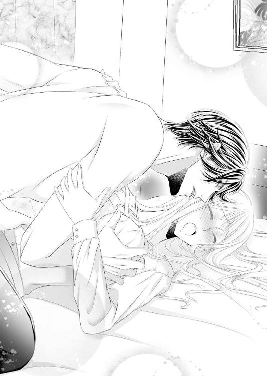
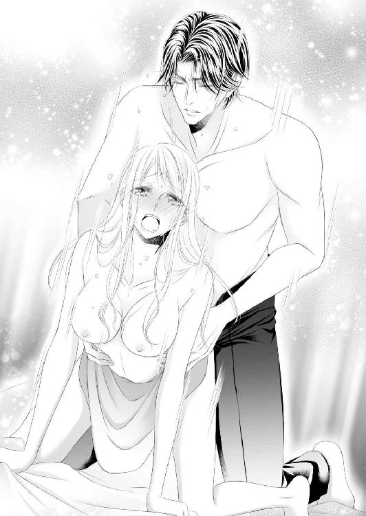
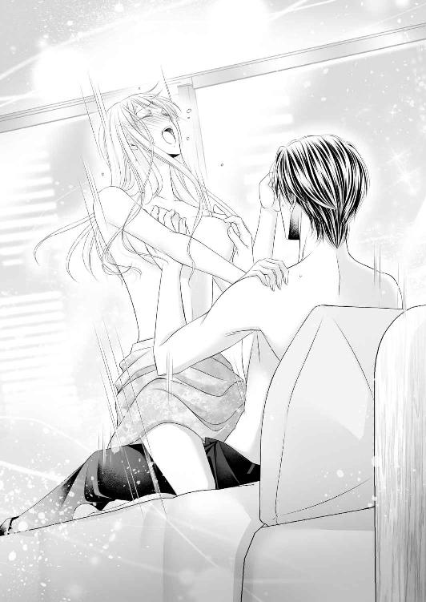

| 俺様なイケメン同僚を誘惑したら、溺愛されて逃げられなくなりました! (LUNA文庫) | |
| 朝陽 ゆりね | |
| 天海社／LUNA文庫 (2018) | |
俺様なイケメン同僚を誘惑したら、溺愛されて逃げられなくなりました！
［著者］朝陽ゆりね
［イラスト］緋月アイナ
第一章 賭けに負けてしまった！
仕事が終わってから同期四人で話題のイタリアンに行き、さんざん飲んでしゃべって、二件目のスポーツバーにやってきた。
最初の店を出る時に電話をしておいたので待つことなく案内された。いつもより混んでいるので電話は正解だった。
大きなテレビ画面が店内に四台設置されていて、サッカーの試合が映っていた。スポーツにはあまり興味はないものの、このお店はお料理もおいしいし、お酒の種類も豊富なのでけっこう利用している。スポーツバーとはいえ男性向けではなく、女性が利用しやすいよう随所に配慮がなされている。だから男女一緒の客だけではなく、私たちみたいな女性だけの客もそこそこいる。
現在、延長戦で後半十分。もうすぐ終わる。画面の右上に「チャンピオンズリーグ」とあるので、たぶんＰＫ戦になると思う。
スポーツ全般ルールなどにはあまり詳しくないものの、サッカーとテニスだけは観ている。特にサッカーではワールドカップ。テニスではウィンブルドン選手権、全豪オープン、全仏オープン、全米オープンの四大大会。あとは、オリンピックかな。あ、フィギュアスケートと柔道も好きかも。
とはいえ最近は卓球も見るようになった。こう考えたら、私、こと阿久根里香子はけっこうスポーツ観戦が好きなのかもしれない。
「ねぇ、賭け、しない？」
と、いきなり言い出したのは芦田かおる。同期四人組の一人で、私たちの中ではたぶん一番おしゃれに気をつかっていて、顔もかわいいと思うし、スタイルもいい。本人も自覚しているのか、社内のイケメンに言い寄っているのを知っているけど、それは礼儀正しく追及せず、本人からなにか言われたら応援したり励ましたりしている。
とはいえ正直言って、ちょっと面倒だなと思っていたりする。なんというか、なんとなくちょっと苦手なんだよね。どこがどうってわけじゃないのだけど......私の性格と真逆っぽくって。
ただ、人間関係って、自分が思っていることは相手にも通じるもので、きっとかおるも私のことをイマイチって思っていると思う。入社当時はそうでもなかった。だんだんそんなふうに感じるようになったのだ。特に最近はそう思うことが多い。嫌われるようなことをした記憶がないから、きっと私と同じように、なんかやりにくいって感じなんだと思う。相性というか。そして自分がそうだから相手に伝わるのか、相手がそうだから自分に伝わるのか、ここはわからないところだ。卵が先か鶏が先かの話だけど、つまるところ、私はかおるが苦手ってことだけは事実。
他の二人、佐藤千絵と山田智美が私とかおるのことをどう考えているのか気になるものの、あえて触れないことにしている。というのも、この二人はそれぞれかおると遊びに行ったりしているようだから、ヘタに踏み込まないほうがいいと思うから。
千絵は小柄でちょいプリって感じでかわいいし、智美はスポーツ大好きなスレンダー。この店も智美が見つけて通うようになった。
三人ともそれぞれ個性があってきれいだったりかわいかったりするのだけど、私だけ平凡でたいしてきれいでもかわいくもなく、取り柄もない極めて普通のＯＬだ。最初はちょっと気後れしていたものの、二年も一緒にいたらさすがにそんな気持ちもどこかへ行ってしまった。
「これ、確かＰＫ戦あったよね？」
「うん」
私が同意すると、かおるはにこっと笑った。
「入れるか入れないか賭けて、一番外した人が罰ゲームをするの」
「罰ゲームってなにをするのよ」
と、千絵がすかさずツッコミを入れる。
「落ちない男、真田さんに迫るってのはどう？」
「迫るぅ!?」
思わず三人でハモってしまった。
「そ。真田さんを落とすために迫るの」
そんな......ムリ。とはいえ、千絵も智美もなんだか乗り気のようできゃいきゃい言っている。酔っぱらっているからだ、きっと。
「ムリだよ、真田さんってイケメンで仕事もすごくデキるって社内でも人気すごいのよ。なのに誰にも靡かず、浮いた話がまったくない人なんだから」
「だから罰ゲームなんじゃない。下半身ゆるい人に迫ったって意味ないわよ」
「ホントホント、それだったら単に捧げに行くようなもんだもんね」
「捧げるじゃなくて食われる、でしょ」
千絵も智美もなんてことを。
「それに、イヤなら勝てばいいだけのことじゃない」
「そんなぁ」
かおるのちょっぴり意地の悪い微笑みにチクンとくる。それって、まさか......ううん、考えすぎ。確かにかおるが言うように、勝てばいいんだし、外国のサッカーの試合での賭けでイカサマなんかできないんだから勝ち負けは平等。
「始まるわ。えっと」
かおるがスマホを取り出し、メモ帳アプリを展開した。
「一回目、入ると思う人」
全員入るに手を上げた。それをアプリに入力する。
「みんな一緒だったら勝負にならないわよ」
「そんなこと言ったって、入るか入らないか二者択一なんだから、最初からそんなに分かれないよ」
今度は智美が返事をする。四人で「そうだよね」と言いながら、ＰＫの様子を見守った。
ＰＫは入る確率のほうが高い。そしてチャンピオンズリーグは勝抜戦だから負けたら終わり。ＰＫが進むにつれて緊張が高まってくる。見ているこっちのほうがドキドキハラハラしてくる。
最初は入っていたけど、二チーム合わせて六人目が――外した！
「あっ」
「やったー！」
私と千絵が入ると予想し、かおると智美が外すに賭けていた。
ウソぉ～。
「ヤだっ、マズいよぉ」
千絵が情けない声を出す。私はそれすら出ない。
「これからこれから。始まったばかりじゃない」
外すのを見ると、次も外しそうとか思ってしまう。だって次の相手チームのキッカーは入れないとせっかくのリードを無駄にするし、外したチームのキッカーは自分が入れないと負けに大きく進んでしまうから。
どうしよう......迷う。
次のキッカーには私とかおると智美が入るに賭け、千絵だけが外すに賭けた。
「ああっ！」
外した！
ちょっ。
「これで里香子が二敗、私たち三人が一敗だね」
「うううう......」
ヤバい、このままでは負けちゃう。
その後、八人目九人目とシュートを決め、私たち四人も入れるに賭けて勝敗が変わらずに最後十人目になった。
私が入れるに賭けると、かおるも同じように入れると言った。千絵と智美が外すほうに賭ける。
お願い、入れて！
固唾を呑んで見守る。もうお酒の酔いも吹き飛んでしまって、本気で祈っていた。
お願い！
「ああ！」
外したっ。マジで!?
「罰ゲームは里香子に決定～」
「そんなぁ～」
私だけが三敗。信じられない。
「アプローチの予定と結果はちゃんと報告するのよ、わかった？」
「うえええーーーっ」
吹き飛んだはずの酔いが戻ってきて、なんだか急に頭がクラクラしてきた。
この私が、あの〝落ちない男〟真田さんに迫るの!? 絶対、ムリ！
そう思った時、ふとかおると目が合った。
む。
なによ、その目。はなっからムリでしょって言いたい？
..................その通りだわ。
「里香子、頑張ってね」
イケメンでハイスペックの真田さんが私なんかに靡くはずもないわよ。
あ。
ちょっと待って。これ、悩むことないかも。
だって、はなっからダメなんだから、さっさと飲みに誘って断られたらいいんだ。
なーんだ、ぜんっぜん悩むことじゃないわ。
「聞いてる？ 里香子ぉ」
「聞いてる聞いてる。わかったわよ、負けたんだから迫ってくるわよ」
私がそう言うと、三人は「きゃー」と黄色い悲鳴を上げた。
「はいはい、わかったからそんなに大きな声出さないの」
この夜はもう一杯だけ頼んで解散になった。
＊＊＊＊＊
【かおるん】ちゃんと迫りなさいよ
【トモ】そうそう、ウソはダメよ
【えみーご】本人に確認するからね！
ううう......みんな、手厳しい。
【かおるん】一週間以内に声かけること！
【えみーご】賛成！
【トモ】賛成！
ううう......みんな、容赦ない。
【リカコ】わかったわかった。ちゃんと罰ゲーム、受けるから
【トモ】絶対だからね
【えみーご】結果を楽しみにしてる
【かおるん】うまくいったら棚ぼたでラッキーじゃない。健闘を祈る！
勝手なことを。
互いにスタンプを送り合ってトークを閉じた。
「はぁ」
本当に困ったことになった。よりにもよって、男の人を口説くなんて。
しかも......真田さんなんて。
一度は、なぁ～んだ、なんて思ったものの、それは酔っている時のこと。シラフになって置かれている状況を考えたら、とんでもなくて、もう真っ青。どうしてこんなことになってしまったのだろう。
一瞬脳裏を「かおるにハメられた？」という考えがよぎった。だけどあの賭けではイカサマはできないから、かおるだってリスクはある。すべては負けた私が悪いのだ。
ふええ、困ったよぉ～。どうしよう。
私たちが勤めているのはアドバード株式会社という名の広告代理店。私たち四人は営業デスク所属で営業さんたちのサポートをしている。朝昼晩関係のない広告代理店の営業サポートだからとても忙しいものの、営業成績とかノルマとかはないから実にお気楽。
それに対して、真田修一さんはやり手の営業マンで、大手から広告を取ってくるし、社内の敏腕ＣＭライターやコピーライターにだって負けずに言い返す。そしてたいてい真田さんのほうが正しくて、そっちに決めてうまくいっている。だから上からの評価もかなり高い。
ウチは総じてクリエイターのほうが意識的な地位は高い。とはいえトップクラスの営業マンはクリエイターより一目も二目も置かれている。真田さんはそんな人の中の一人だった。
そして、広告代理店のスタッフはイメージを裏切らず派手な性格の人が多くて、稼いでいるから羽振りもいいので社内外問わず人気がある。男性はいろんなところで遊んでいるらしいし（私は経験したことはない）、女性でもハイスペックダーリンを獲得するために常に努力している（飲み会に参加してるって意味だけど）。
よく言えば華やか、悪く言えばチャラい職場雰囲気の中で、真田さんには浮いた話が一つもない本当に珍しい存在だった。
営業成績はいつもトップクラスという敏腕営業マンだ。でもそれだけじゃない。背もスラリと高く細マッチョタイプで、鼻筋の通った目元涼しげなイケメン。三十二歳とは思えない渋めクール系。ご実家は伊東で高級旅館を経営されているらしく、いずれは継ぐのではないかって噂もある。
あんまり冗談とか言わなくて、でもそれは女性が期待する範囲の話で、きっと話術は巧みなんだと思う。想像だけど。
そういうこともあって社内外でとても人気が高くて、狙っている人がたくさんいると聞いている。だけどどんなにイケてる美人がアプローチしてもまったく靡かないらしい。グループで飲み会に行くことはあっても、個人ではないらしくて、孤高の営業マンって陰で呼ばれている。
そんな人が私なんかの誘いに応じるはずがない。気負うこともない......と思うものの、そう簡単に割り切れることでもない。だって私から誘ったなんて周囲に知られたら......そういう目で見られて居づらくなるし。
かわいいわけでも美人なわけでもないので......家族や親戚くらいよ、里香子ちゃんかわいいよとか、きれいになったわねって言ってくれるのは。
プロポーションだって普通。バストはＤカップとはいえ、それだけを強調するのってアホっぽいから目立たないようにしてるし。通勤の便利さにこだわったおかげで家賃がやや高め。贅沢しないように気をつけているから、外見もさることながら持ち物もパッとしない。
まぁ、だからどんなに気負っても冗談にしかならないから、軽くご飯食べに行きませんか～って誘って、ムリって言われたら、そうですよね～ってささっと退散すればいいんだよね。
かおるたちだって、成功するなんてこれっぽっちも思っていないだろうから、ダメだった～って言えば、そりゃそうだろう～で終わるだろうし、軽いお誘いだったら万が一誰かに聞かれても、社内の噂になることもないと思う。
唯一、真田さん本人に、阿久根は軽い女って思われるだけだ。とはいえそれも、今後も接点はないから、恥ずかしいけど実害はないと思うし。
......そう、恥ずかしいのよ。そこに尽きるの。そんなことができる性格じゃないから。
どういうふうに声をかけよう。フロア内でも席が離れているのに......。席を立った時、さり気なく追いかけて、誰もいないところでそっと声をかけようか。
ああああ......それってすっごく狙っているじゃないの。ダメダメっ。人のいないところはいかにもって感じだから避けるべし。
だったら誰かいるところで小さな声で誘う？ いや、それもたいして変わらないよね。
あー、どうしよう。社内メールだったらなおさらだし。気軽に会話ができる間柄だったらいくらでも言えるのに。
確かに同じ営業第一部所属だけど、課は六つあって、私は六課のお世話係で、真田さんは一課。同じフロアなので顔を合わせる機会はあるし挨拶はするものの、まったく接点がないんだよね。
くぅ～～罰ゲームぅ～～。ツラい。
やっぱり、かおる、私が気に入らないから、わざと......うぅん、それはないって自分でも断言したじゃないの。
あの賭けは誰が負けるかなんてまったくわからないものだから、私を狙っての意地悪であるはずがない。偶然だ、偶然。それを私への意地悪だなんて思うのは、私の意気地が悪すぎる。反省反省。
とにかく、罰ゲームをちゃちゃと済ませてしまわないと。
もうホントに憂鬱。
＊＊＊＊＊
「おはようございます」
「おはよう～」
「おはようさん」
「おはようございま～す」
朝九時。フロアには机に対して半分くらいしか人がいない。フレックスタイム制を導入していて、この時間に出勤してくるのは内勤スタッフだけ。営業さんたちはたいていお昼前くらいの出社になる。というのも、接待とか撮影同行などで夜が遅いから、朝はどうしても遅くなるというわけだ。だから離れた真田さんの席を眺めてみても、彼の姿はなかった。
はぁ......。ため息ばかり出てしまう。
「どうした、阿久根ちゃん、ため息ついて」
「あ、金本さん、おはようございます。早いですね」
いつもはいるはずのない人が出勤してきたので驚いた。
「早くないよ。これから帰るんだ」
「帰る？」
「昨夜、明け方近くまで接待してたんで、仮眠室で寝てた。これから帰ってもうひと眠りしたらまた来る」
なるほど。
「大変ですねぇ。お疲れ様です」
「ホントホント」
そんな会話を交わしていたら、視界に真田さんが入ってきた。
あれ、真田さんもこんな時間に珍しい。でも、ラッキー。なんとかうまく話ができる状況にしないと。
そう思い、ふと我に返った。
こんな罰ゲーム、真面目にやるべきなのかな......スルーしちゃダメだろうか。だってうまくいくわけないんだから、声すらかけられなかったって言えば......えー、でもやっぱりマズいかな。かおる、約束破ったって怒るだろうし。
うーん、やっぱり気楽に声をかけて、ささっと断られちゃおう。それがいい。
そう思ったら、立ち上がっていた。
そして、そそそっと真田さんのところに近寄っていく。声をかける前に改めてフロアを見渡したら、人がすごく少ないから、ちょこっと話しかけても聞かれないだろう。
あ。
かおると千絵と智美がこっちを見てることに気がついた。
そうよ、これでちゃんと誘ったって証明できるんだから。
「真田さん」
思ったよりか細い声で呼びかけてしまった。真田さんは驚いたような顔をして振り返った。
やっぱり、イケメンよね。
「あ、阿久根さん。誰かと思ったよ」
「すみません、ちょっといいです？」
と、自分なりに必死でかる～く言ったつもりなんだけど、声を抑えているからか妙に低くなってしまって......悲壮感漂ってない？ 気のせい？ しかも、三人の視線が背中に突き刺さる感じ半端ない。
ちょいちょいと手招きし、フロアを出て廊下に。
さぁ、里香子、ささっと誘ってささっと振られよう。
言ってしまえ！
「真田さん、日本酒好きって聞いたんです。おいしい店知っているので、今度行きません？」
はー、どっからそんな言葉引っ張ってきた！
我ながら驚き。これが追い詰められた時の火事場のバカ力なのかな？ 窮鼠猫を噛むか？ ......おいおい、私は確かに窮鼠だけど、真田さんは無関係で猫でもなんでもないでしょ。混乱中で全然関係ないこと考えてるよ。
真田さんが日本酒好きかどうかなんて、まったくこれっぽっちも知らないし、日本酒のおいしい店どころか私はワイン派なんでほとんど飲んだことないんですが。
へらっと笑った私の顔を真田さんがじーーーっと見てる。
「あ、間に合ってます？ だったらいいんです。すみませんでした、煩わせちゃって」
あははーっと笑って去ろうとしたら、進行方向に体を寄せられて行く手を遮られた。
「まだ話してる最中だけど」
「え......あ、はい。そうですね......」
話は終わってるんじゃ......と思うものの、私から声をかけたんだから、ここはおとなしく従わないと。
「俺がポン酒好きってよく知ってたねぇ。あまり人に言ってないんだけど。どっからの情報？」
は！
それは口から出まかせです！ ......とは口が裂けても言えない。余計にいい加減な女だって思われてしまう。
「いえ、その......えーっと、どっからの情報でしょうねぇ。よく覚えてないけど」
「飲み会の席で聞いたとか？」
「どうだったかなぁ。でも、そういえば、真田さんってあんまり飲みに行ったりしないんでしたよね？ だったら――」
「そんなこともないよ」
私の言葉にかぶせるように否定されて体がビクンと跳ねた。
なんか思っていた展開というか、方向に進めないので、焦る。
「えーっと」
「阿久根さんのお勧めの店、興味あるな。どこ？」
え、え、え、え、えっ......ど......どこでしょう......ね。
頭の中、真っ白で、なにも浮かんでこないよ。
ふと目に入ったのはポスター。それは雑誌の広告で、街の名前がいくつか書かれていた。
「渋谷なんですが......」
渋谷のどこよっ！ ああ、でも、なんとかここをしのげば、仮にあとになって店だけ教えてくれって言われても、ネットで調べて伝えればいいからっ、頑張れ里香子ぉおおおっ！
「渋谷か。なんという店？」
「そんなに簡単には教えてあげられませんよ。でも、真田さん、お忙しいだろうから、やっぱり」
「じゃあ、連れて行ってもらおうかな」
連れ、て？
「えええ、真田さん？」
「その店、興味あるから是非教えてほしい。案内してくれよ」
「ええーーーー！」
と、叫んでしまって、慌てて手で口を押さえた。
「なにをそんなに驚いてるんだ？」
「い......いえ、別に......あ、えと、えーっと」
ちょ......なにが起こっているのか、まったくわからない。頭が回らない。今の状況はどういう感じなの!?
あ、うぅん、店よ、店っ。日本酒のおいしい店を超特急で調べないとっ。
「さっそく、今夜行こうか？」
「今夜ぁ!?」
「ああ。金曜だし、ちょうどいいだろ。予定でもあるの？ もしかして残業？」
いえ、予定も残業もないですけど、それでは調べている時間がないからダメですぅ。
「えーっと」
「六時に一階のフロアで待ち合わせ。じゃあね」
私の肩をぽんぽんと軽くたたき、真田さんは去っていった。
............えーっと。
あの、これは、やっぱり、真田さんとのサシ飲みが成立したってこと、よね？
え、マジで？ ホントに？
真田さんって女性と飲みに行かない人って話だよね？
どういうこと？
茫然自失の私を現実に引き戻したのは、かおるだった。肩を掴まれたのだ。
「あ、かおる」
「大丈夫？ 顔色悪いよ」
「......そうかな」
「真田さんは誰にも靡かない人だから気にすることないわよ」
「それが飲みに行くことになったの」
「――え？」
あ、しまった。言わなかったらよかった。
「マジで？」
「あ、うん」
「いつ行くの？」
「今夜」
素直に答えたら、かおるのほうが固まった。
「どういうことよ!?」
「どういうって......こっちが知りたい」
「！」
かおるはキッと私を睨むと、すっと身を翻して止める間もなく行ってしまった。
そんな、どうして私が咎められなきゃいけないのよ。賭けに負けて罰ゲームを受けなきゃいけなくなったのは私のほうなのに。かおるたちに言われるまま誘っただけなのに。どうしてそんなに睨まれなきゃいけないの？
あぁ、だけど、今はそんなことはいい。今夜のことを考えないと。
そうよ、早く渋谷で日本酒のおいしい店を探さないと。仕事もあるってのに、どうしよう。
ランチタイム、もう取ってる場合じゃないよ！
第二章 なんだか雲行きが怪しいんですけど！
ランチタイムはもう必死だった。
グループトークでランチタイムは別行動と知らせ、近くのオープンカフェで端の席に座ってスマホをいじっていると、次から次へと千絵と智美からメッセージが飛び込んでくる。それが邪魔をしてなかなか「渋谷で日本酒のおいしい店」を探せない。
それでもなんとか評判のいい隠れ家的な店を見つけ、場所を確認する。それから店内の写真とか、口コミなんかを詳しく調べた。
でも......行ったこともない店によく行くような顔をしてもバレるよね？
悩んだ末、予約しようとしたらいっぱいだったと言おうと考えた。それなら明日にでも下見に行って、真田さんに伝えたらいいと思うし。
自分の中で辻褄を合わせ、矛盾がないか何度も確認し、それからようやくトークを見てみたらすごく流れていて驚き、やっと追いついて事情を伝える。
罰ゲームを果たそうとして真田さんを誘ったこと、そうしたら意外にもＯＫされてしまったこと。口から出まかせで言ってしまった「渋谷で日本酒のおいしい店」をずっと探していたこと。
すると千絵と智美は驚きながらも「頑張れ！」と返事をしてきた。
なにを頑張るのよ。私、真田さんと付き合おうなんて気持ち、これっぽっちもないよ。
気になるのはかおるだ。既読にはなるのに、まったく参加しなかったからだ。二人と一緒にランチしてるはずなのに。それとも席を外しているのかな。わからない。
かおるは苦手だ。三人もしくは四人でいる時はほとんど気にならずに気楽でいられるものの、二人きりだと話すことがなくて困ってしまう。だからいつもものすごく下らないことを話してしまうのだけど。でもそれはきっと、かおるもわかっていると思うし、同じだと思う。かおるだってたいしたことは言わないから。
そのかおるはあの時私を睨みつけて足早に立ち去ってしまった。明らかにあの目は怒っていた。でも、怒られるようなことはしていない。あるとすれば、考えられることは二つ。
一つは私があっさり真田さんに振られなかったことが悔しいということ。
もう一つはかおるが真田さんのことを気に入っているか、もしくは好きだってこと。
でも、後者だったらこんな罰ゲーム、言い出したりしないよね？ まさか自分が負けて、それを理由に告白しようだなんて考えられないし。
ってことは、私のことが気に入らなくて、赤っ恥かかせた上に冷たくされてへこむのが見たかったってことかな。
それって切ない......同期で今まで四人で仲良くしてきたんだから、そんなふうには思いたくない。
はぁと盛大なため息をついて立ち上がり、職場に戻る。今になって空腹を感じるものの、どうしようもできない。あとで甘めのカフェオレでも飲んで誤魔化そう。
席につこうとしたら、千絵と智美がこっちを向いていて、小さく手を振っている。かおるは......下を向いていて、こちらを見る気配がない。
それを見て、もう一度ため息をつきそうになったものの、ぐっと我慢した。
ため息ばっかりついていると幸せは逃げていくっていうから気をつけなきゃ。
営業さん依頼の資料の制作や、郵便の準備、アンケート用紙の整理、キャンペーン応募はがきの整理......細々したことがたくさんあって、のんびりしている暇はない。しかも今日は残業できないので、今日中、もしくは明日の午前中までに終わらせないといけないものから取り掛かる。
必死で頑張っていたら、あっという間に五時半になっていた。終業時間が過ぎていたことにも気づかなかった。
そろそろ片づけを始めないと間に合わない。
ああ～、すごく疲れた。結局、甘めカフェオレを飲むこともなく、一時から五時半までずっと集中していた。
......お腹すいた。すごいお腹すいた。
真田さんがどういう気まぐれで私とサシ飲みをしようと思ったのかわからない。後にも先にも今夜だけの話だし、かおるたちにはご飯は食べたけど、それ以上の発展はなかったと言えば済むことだ。ここに嘘偽りはないんだから、おいしいものを食べて飲んで、楽しめばいいと思う。
それに別に真田さんとはトラブっているわけではないので、そんなに構えなくていいと思うしね。単純に日本酒好きって思って親近感を持っただけかもしれないし。
うん、それでいい。ヘンに緊張せず、楽しもう。
バタバタと片づけを終えて立ち上がった際に周囲を見渡すと、かおるたち三人の姿はもうなかった。それでスマホを確認したら、グループトークに千絵と智美から「ファイト！」とあって、かおるからはなにもない。
一度は持ち直した気持ちは、また萎えてしまい、はあ、と大きなため息が落ちた。
「失礼します」
「おう、お疲れ」
「お疲れ様」
「また来週～」
六課の営業さんたちと挨拶を交わして席を立つ。トイレに行ってお化粧直しをしてから一階へ向かった。
真田さんはもう来ていた。
「すみません、お待たせしました」
「いや、俺も今降りてきたところ」
「そうなんですか。よかった。あ、あの、お店なんですが」
「そうそう、その店、もう予約した？」
「いえ、していません。それが」
予約できなかったと続けようとして言葉をかぶせられた。
「さっき、よく行く店から、うまいワインが入ったと教えてもらったんだ。予約してないんだったら今日はそっちにしない？」
え？
「それともやっぱりワインより日本酒のほうがいい？」
「いえっ、ワイン、大好きです！」
「よかった。じゃあ、そうしよう」
真田さんはうっすら微笑むと、歩き出した。その後を追って私も歩き始める。ビルを出たら真田さんがタクシーを止めたのでまた驚いた。
「新宿まで」
運転手さんに指示している言葉を聞いて、新宿に行くんだ、と思う。と同時に助かったと思った。渋谷のお店、電話したものの予約が取れなかった、というウソをつく必要がなくなったからだ。
もうウソだらけで我ながら罪悪感半端ない。ウソって一つついたら、それを取り繕うためにまたウソをつかないといけなくなる。賭けに負けて罰ゲームをしなくちゃいけないってだけで、なんの関係もない真田さんに咄嗟のこととはいえ「おいしい日本酒の店がある」とウソを言い、それを取り繕うために場所を「渋谷」だとこれまたいい加減に答えてしまった。
私自身、日本酒は嫌いじゃないものの、ワインのほうが好きなのでついそっちを頼んでしまう。だから「渋谷にある日本酒のおいしい店を知っている」わけがない。さらにそれを取り繕うため、ネットで調べた、行ったこともない店を〝お勧めの店〟に仕立て上げ、挙げ句に電話したけど予約できなかったことにするつもりだった。
それで今日はよく行く店に案内し、後日昼間に調べた店を下調べして、真田さんに伝えようと考えたんだけど。ここまでいっぱいウソをついたからもう手遅れかもしれないものの、少しでも不要なウソをつかないでおけたことは大きい。自分勝手だとは思う。
タクシーが新宿三丁目交差点で止まり、私たちはそこで降りた。
真田さんは足取り軽く歩いていく。それについていく私。
細い道に入って間もなくのビル、最上階の七階で降りたら飾らないモダンな感じの入り口があって、真田さんはためらいなく扉をあけた。
「どうぞ」
「ありがとうございます」
会釈をして中に入ると、間接照明で照らされた店内はシックな装いで、窓から離れた奥の壁はガラス張りで、さらにその奥は広くはないけど部屋ごとワインセラーになっていた。相当数のワインがある。
すごい。
「スタッフに頼めば中に入れるんだ」
私がきっと目を丸くしているからだろう。真田さんがそう教えてくれた。
セラールームに入れるんだ。みんなにも教えてあげたい。
自分の中で「かおるにも？」とちょっぴり思う気持ちもあるものの、同期で今まで一緒に過ごしてきたのだから、差別はしたくないし、かおるにだって喜んでもらえたら嬉しいし。なんだか複雑。やっぱり、ね。友達だと思っているから、これでも、ちゃんと。
「阿久根さん、こっちだって」
「あ、はい」
呼ばれて席につく。
「好きなもの頼んでいいよ」
「好き嫌いないんでなんでもいけます。真田さんのなじみのお店なら、お任せしたいです」
「そう？ じゃあ」
そう言って、出てきたシェフと話し始める。五十くらいかな。顔にはくっきり皺があるけど、全身から若々しさが感じられるとても雰囲気のいいシェフだと思う。
「お勧めのワインとそれに合ったつまみを頼むよ」
「了解」
シェフは笑いながら答えると、ちらっと私を見た。そのまなざしがなんだか意味深のように思えたのは気のせいかな？ ......考えすぎよね。
「ここ、よく来られるんですか？」
「ああ。もう忘れられない出来事があった店で、俺の社会人人生を支えてくれる大事な出会いの場にもなったところ」
「へぇ、すごい」
私がそう言うと、真田さんは小さくうなずいた。そして懐かしそうに調理場のほうに顔を向ける。
「新入社員の時、ある撮影が終わって、ここで打ち上げをやったんだ。最初はよかったんだが、ある俳優が急に怒り始めて文句を言い出した。もう言っていることが無茶苦茶で、今回の仕事にはなんの関係もない他の代理店で起こったことを持ち出して俺に向けて怒鳴り散らした。でも、相手が相手だから誰も止めに入らず、みんな話を合わせて俺を叱って、その場は終わりになった。入社間もない俺は、もうショックで動けなくてさ。ホント、情けない。みんなが帰っても動けないでいたら、さっきのシェフがワイン片手にやってきて、飲み始めた」
「励ましてくれたんですね」
「まぁ、結果的にはね」
「結果的？」
「一言も口をきかず、目の前のワインを飲んで、俺にも注いで、ボトルでグラスを指して無言で勧められた」
真田さんは私を見てから、懐かしむようなまなざしで奥にあるテーブルに視線を動かした。あのテーブルがその時に座っていた場所なのかな。
「一本あけてから、また来いよって言われて、それからシェフとの付き合いが始まった。良い時悪い時、ここに通ってうまいワインを飲ませてもらってる」
「じゃあ、十年くらいですね？」
「そのくらいになるかな」
真田さんが同意をしたタイミングでシェフがワインとグラスを持ってきた。その後ろにはお皿を持ったスタッフもいる。スタッフのほうはおいしそうなチーズやレーズンの載ったお皿を置いて先に立ち去った。
シェフは手に持つワインを私たちに見せてくれた。
「シェフ、それ」
真田さんはワインを見た瞬間、目を丸くして言ってから、急に笑い出した。
「面白いジョークだけど、ハズレ」
「なーんだ。でも珍しいから。というか、初めてだからな。お客さん、このワイン、知ってる？」
エチケットと呼ばれるワインのラベルを示して問われ、私はワインを見つめた。
シャトー・カロン・セギュール――有名なワインだ。
エチケットにハートマークがついているので、恋人たちが記念日に飲むという。だからシェフの意図はすぐにわかった。
「私たち、同じ会社の同じ部署で働いているんです」
「なるほどの情報だ。では僕のほうからも一つ情報提供を。シュウとは十年の付き合いだが、女の子と二人で来たのは初めてだ」
え――それって、どういう......
シェフが抜栓してくれてグラスに。深紅の輝きがグラスの中で揺らめいてとてもきれい。
「どうする？ 続きはデキャンタするか？」
シェフの問いに真田さんは少し考えた風に首を動かし、それから「このままでいい」と答えた。シェフはうなずいてテーブルを去っていく。
「私もワインが好きでよく飲むんですが、デキャンタするのとしないのとの区別がイマイチよくわからないんですよ。カロン・セギュールって重い赤だし、したほうがよかったりしません？」
「先に飲んでみて」
「あ、いただきます――んんっ、おいしい」
濃厚で蕩けるような感じ。本当にとってもおいしい。
「こっちも遠慮なくどうぞ」
「いただきます」
クラッカーにチーズを乗せて食べたらこれがまた！
「デキャンタって空気に触れさせてワインを目覚めさせ、味と香りを称えさせるためなんだけど、それは早く開花させるためと同時に、味を均等にするためでもある。対してボトルのまま置いておけば、開花は遅くなってゆくものの最初と最後では味が違って、ワインの変化を味わうことができる。今夜はそっちを楽しもうかと思ったんだ」
「なるほど。そうなんですね」
「ところで」
「はい」
と、返事をした私に、真田さんは意味ありげな微笑みを浮かべ、続きを口にした。
「阿久根さん、日本酒だけじゃなく、ワインもいける口なんだね」
「？」
どういう......あ！
「とんでもない。のど越しがいいから、ちょっとばかり飲む程度で......」
ヤ......ヤバい。
「謙遜しなくていいよ。確かにカロン・セギュールは有名だ。でもだからって誰もが知っているわけじゃない。エチケットを見た時の印象なんて、かわいいとか、ハートマークなんて珍しいとか、それくらいだと思う。これを見てシェフが俺たちの関係を勘違いしているとかって、普通は思いつかないと俺は思うんだが」
う、それは......
「そこで本題。阿久根さん、俺が女性と二人では飲みに行かないって話は知ってる？」
「......はい」
「だったら、どうして今夜は誘いに乗ったか疑問なんじゃないか？」
「そうです。おっしゃる通りです」
「でも俺も疑問を持っている。どうして女性の誘いに応じないって知っているのに、わざわざ誘ってきたんだろうって」
ううう......返す言葉がない。
「それから、阿久根さんは俺が日本酒好きだと聞いたと言った。俺は日本酒は飲まないから、誰からそんな話を聞いたのか知りたいと思った。だから誘いに応じた」
ぐうう......
「最後にもう一つ。俺のほうは阿久根さんがワイン好きだって情報を持っている。飲み会の時、必ずワインを頼んでいたってね」
「すみません！」
テーブルに額がつくくらいまで頭を下げた。
「謝らなくていいよ。でも俺の推理を最後まで聞いてほしい」
「......はい」
「考えたんだ。阿久根さんは日本酒を飲まない、か、飲めない。そこに誰かから俺が日本酒好きだという間違った情報を得た。だから日本酒のうまい店を知っているとウソをついて誘った。どう？」
どう、もなにも、そうじゃなく、追い詰められた末の口から出まかせで......ごめんなさい。
「そんなに俺とメシ食いたかった？」
「..................え」
「ってことだろ？」
ちょ、ま......
「そこまでされたら断るのは忍びないと思うし、少なくても俺が日本酒好きってどこからの情報かは聞きたい」
「すみません」
と、もう一度、素直に謝ってみたものの、目が合うと不敵に微笑まれ、言葉を失った。
なんか果てしなく真逆に勘違いされているような気がする。
「飲んでよ。せっかくのカロン・セギュールだ。それにここのチーズは厳選されたものしか置いてないから絶品だよ」
そうだけど......確かにおいしいけど！
お皿の上がきれいになったと同時に次が運ばれてきた。今度は......これ、ラビオリ？
「リコッタチーズとマッシュルームのラビオリです。このままでもいいですし、こちらのレモンクリームソースをつけて召し上がっていただいてもおいしいですよ」
「いただきます」
香りがものすごくよくて、食べたらトロトロのチーズが溢れ出した。
「おいしいぃ～」
シェフがワインを注いでくれる。
「目覚めの若々しい味が楽しめます」
言われて飲むと、爽やかで、チーズの濃厚さを流し去ってくれる。
「これ、止まらないです」
シェフと真田さんが微笑ましそうに見ているのを無視して、パクパク食べてしまった。というのも、食べ始めるとお昼を抜いたことを胃が思い出したようで、食欲が湧く湧く！
次に注がれたのを飲むと、確かに味がまろやかになっている。
今まであまり意識したことなかったんだけど、ワインって料理に合わせて飲むだけじゃなく、ワイン自体を楽しむ飲み方があるんだ......って言ったら、ワイン愛好家に笑われるんだろうな。
料理とワインはあっという間になくなってしまった。するとすぐに次が来た。
今度は白ワイン。酸味のある、これまた爽やかなワインで飲みやすい。お料理はアクアパッツァだった。それをシェフが食べやすいように捌いてくれる。
「これもおいしい」
すっかり調子に乗ってドンドン食べてる。
「それで、阿久根さん」
「はい！」
「ちょっと聞くけど、阿久根さんって交際している人っているの？」
「いませんよ」
「じゃあ、俺を誘ってくれたのは、純粋に店を教えるためじゃなく、そういうのを期待しているって解釈していいのかな？」
ぶっ。
いけないいけない、おいしいワインを噴き出すところだった......気をつけないと。
「聞いてる？」
「聞いています」
「それで？」
全身からいやぁ～な汗がぶわっと噴き出してくるのがわかる。飲んだワインが熱を持って逆流する感じも。体中、熱い。
「あの......」
「うん」
「真田さんって、女性に興味ないんですよね？」
「誰がそんなことを言ったんだ？」
「いえ、その、イメージで」
「へぇ」
へぇって......困る。もしかして、私、窮地に陥ってる？
ちょっと待って。なんか焦っているからおかしくなってる。もともとはかおるたちとの賭けに負けて、罰ゲームで真田さん口説いて落とすってのをすることになって......でも難攻不落の真田さんに私なんて相手にされないから、さっと誘ってさくっと振られるのが目的で......それなのに、この状況が理解できないっ。
焦って思わずワインをグイっと飲んでしまった。そこにすかさず真田さんが注ぐものだから、ますます飲んじゃって......あれ、視界が滲む。あれ、クラクラする？
「あの、実は」
「うん」
「私、賭けに負けたんです」
「賭け？」
かくかくしかじか、一生懸命昨夜のことを説明した。真田さんは、うんうん、と黙って聞いてくれている。その様子を見ていると、だんだん申し訳なさが募って、どうしていいのかわからなくなってきた。
でも、だからこそ、真摯な態度で謝らないと。関係ないことに巻き込んでしまったから。
「本当にすみません」
謝れば謝るほど喉が渇いて、あああってなる。だからついワインを水を飲むように喉に流し込んでしまって......
「なるほど、阿久根さんが俺を誘った経緯はわかった。日本酒の件も」
「すみません」
それしか出てこない。もう顔を上げて、真田さんの顔を見ることもできない。こぼれそうになる涙を懸命にこらえるだけだ。
「話自体は気にすることはないよ。怒ってないから」
「ホントですか？」
「ウチの会社じゃよくあるノリだから、芦田さんもその調子だったんじゃない？ だけど」
「はい」
「阿久根さんが俺のこと、なんとも思っていないってのは残念だ」
......え？
「それは、あの？」
「好かれているんだって喜んだんだけど？」
え、え、え......それは......
「違うんだろ？」
うっ。
これ、どう答えたらいいの？ イエスと言えば失礼に当たるし、ご機嫌を取るために取り繕ってノーと言ったらまたウソをつくばかりか完全に誤解させてしまう。
真田さんのことは嫌いじゃない。でも、別に異性として好きって思ってるわけでもないし、今は真田さん含め、カレシがほしいとか結婚したいとかも思っていない。好きでもない人と交際する気もない。まして告白されたわけでもないのに。
あ、そうよ、告白されて交際を求められたら、さすがにちょっと考えるかもしれない。だけど、この状況はそうではないし。
私、いったい、どうしたらいいの!?
第三章 朝までそんなこと！
「阿久根さん、大丈夫か？」
そんなことを聞かれたように思う。
「顔色がよくない」
とも言われたような気がする。
なんと答えたのか全然覚えていない。やたら喉が渇いて、心臓がうるさいくらいドクドク打って、体がふわふわするってことだけ記憶にある。
苦しくて、早く座りたくて......違う、横になりたい。そう思っていたらコップを持たされたから水だと思って急いで口をつけた。
「......ふぁ......おいしい」
「もう一杯飲むか？」
「はい」
目の前でコップにミネラルウォーターが注がれる。それをまたグイグイ飲んだ。
「どう？ 少しは落ち着いた？」
「はい。すみません、ご迷惑をおかけして......」
言いつつ、周囲を見渡した。
ここ......ホテル？
......あれ、それって......ヤバくない？
ダメだ、思考が正しく働かない。
「えーっと、ここ......？」
「歩くのも大変そうだったから手近なホテルに入ったんだけど、いけなかったかな？」
......えーっと、いけないんですけど......この場合、それは言えないから、返事に困る。
それに確かに座るばかりか横になりたくて横になりたくて仕方がなかったし。
「辛かったら横になって休んで」
「......は、い」
......えーっと、頭がふわふわするからまともに考えられない。男の人の目の前で横になるのはマズいよね？ あ、でも、こんなに酔っていて気持ち悪がっていたら、さすがに手なんか出さないか。
......いやいやいや、大人気のイケメンが、私なんかに手を出すわけないか。
やっぱり思考が定まらない。
――と。肩を押されたような感触がしたと思ったら、ふわふわなものの上に落ちた気がした。
うぅん、やっぱり落ちたんだ。頬に当たっているのは間違いなくクッション枕。
「阿久根さん」
はい、と言おうとして顔を向けたら――え。
横になっている私の体の上に真田さんが覆いかぶさっているんですけど。
「ちょ」
「さっきの話を確認するけど、君は芦田さんたちとサッカーのＰＫで賭けをして、負けたから罰ゲームを受けないといけなくなった。その罰ゲームとは、俺に迫って口説き落とすことってわけで、今回食事に誘ってきた、ってことでいいんだな？」
げげげ。
そう言われたら、ものすごーーーーく悪いことをしている気がっ。
「どうなんだ？」
この状況でそれを確認されるのは、ツラいっ。
でも私、酔って頭の中混沌としながらも、事情、正確に伝えていたのね。
「すみません！」
「謝るってことは、俺が好きで誘ったわけじゃないってことを認めるわけだな？」
うっ。
「日本酒が好きってのもその場の思いつきで、君自身も日本酒好きでもない。咄嗟のことだったということも」
うううっ。
「これでＯＫ？」
「......はい。本当に、申し訳ないと思っています」
「俺に失礼なことをしたと思って反省してる？」
「もちろんです！」
恐る恐る真田さんの顔を見ると......笑っている。しかも、すっごく意地悪そうに。
でも、それ以上に、この状況、なんとかならないでしょうか......両腕両足、全身使って四方を遮られ、動きを封じられていて、真上至近距離に真田さんの顔があるんですけど！
「あのさ」
「はい」
「本音、本心を話すんだけど」
「......はい」
勿体ぶった言い方、それから声のトーンが下がっていることに、イヤな予感しかしない。
「阿久根さんから誘われてうれしかったんだよね」
..................え？
「俺さ、不器用な性格で、愛想よく振る舞うことが苦手なんだ。いや、仕事だったら頑張るんだけど、プライベートでは無理だ。君に近づきたいと思っているのに、他の女と出かけるなんてことができなくて、ずっとどうやって君を誘えばいいか悩んでいた」
「は!?」
う、う、うそぉっ！
「信じていないみたいだな。でも俺が気軽に女と遊びに行かない男ってのはよく知っているんじゃないのか？ なんたって賭けの対象なんだから」
うっ。
「だから君からのお誘いは青天の霹靂だった。でも君に想われていると思って本気で踊り出したい気分だった。それなのに、なに？ 賭けで負けてウソのお誘い？」
うううっっ！
「責任取ってほしいな」
「責任！」
それって本来は女のセリフ！ ......とは決まっていないけど、たいていは女の決まり文句じゃ。
「渡りに船のお誘いだった。ありがたく頂戴しようと思うし」
「......し？」
「俺のことが好きで告白したのではないなら、好きになってもらおうと思う。だから、今からこの体に俺を刻み込む！」
え............ええっ!? いや、それは困る。そんなつもりないし。
「ちょっと待ってっ！」
「待たない」
言うなり真田さん、身を起こしてネクタイの結び目に指を入れたかと思ったら、すっと抜き取ってぽいって捨てた。
「――――――」
さらにワイシャツもさくっと脱いでぽいっ。さらにさらに、ベルトのバックルに手をかけ、外そうと――
ダメっ！
「！」
慌てて身を返し、うつ伏せになってほふく前進でこの場から逃れようとした。だけどっ。
「おっと、逃がすか」
「あああっ」
ガッシリと右肩を掴まれたと思ったらひっくり返された。
ひええええっ。
「ダメぇ」
「全然ダメじゃない。今夜は君が誘ったんだ。その証拠はスマホにあるんじゃないのか？」
「しょう、こ？」
「友達と賭けのことを会話しているだろ？」
あっ！
「君が誘って飲みに行って、酔って一緒にホテルに来た。そこで俺に求められて、さて、警察呼ぶ？ それともこのまま俺のモノになる？」
「それってほとんど脅迫！」
「半々かなぁ。でも警察が君の主張をどこまで聞いてくれるかわからないんじゃないの？」
うっ。
「それからもう一つ。阿久根さん、芦田さんと同期だから仲良くしているんだろうけど、彼女、俺に君の悪口言ってきたよ」
「悪口？」
「ああ。阿久根さんに誘われたみたいだけど、彼女、誰とでも飲みに行っちゃう子だから気をつけてくださいね、真田さんのタイプじゃないだろうけどってさ」
！
かおる、やっぱり。
「どうして俺のタイプじゃないって思うんだ？ って聞いたら、パッとしないから、だって」
......そりゃそうだけど、でも、ひどいっ。
「見返してやろうって思わない？」
見返す!?
「どうやって？」
「簡単に落ちた、あんな男、ちょろいって言ってやればいいだろ」
ちょ！
「そんなっ」
「ウソじゃないよ。実際、俺は君と付き合いたくて、ずっと機会を狙って様子を見ていたんだから」
いや、それは信じられない。
「信じられない？」
うっ、読まれてる。そんなに私ってばわかりやすいんだろうか？
「どうすれば信じられる？ じゃあ、なにかプレゼントをしようか。君が一発で信じられるようなものを」
「プレゼント？」
「例えば、三百万くらいするエンゲージリングとか」
「えええ！」
「自慢じゃないが、営業成績はいいから給料はかなりもらってる。エンゲージリングなら一生一度の買い物だからこれくらい出すよ」
額面も額面だけど、どうしてエンゲージリングなんて言葉が出てくるの！
「あ、いっそ、婚姻届けとかは？」
「はぁ!?」
「そうしたら俺が真剣だってわかるだろ？」
「真剣って、真田さん」
「本気だってことだ。賭けがきっかけで結婚ってドラマチックでいいと思うけど、どう？」
どう、って言われても......わからないよ、そんなこと。
「付き合わないか？ って聞いてくれれば、二つ返事で了解する。それで君は罰ゲームを成功させて俺を落としたって威張ればいいよ、彼女に」
そっ、それは..................でもでも、この状況が自分で招いたことだってのはわかる。どんな事情であっても、自分でお酒の席に誘って、自ら飲んでしまって、酩酊してここに運ばれた。真田さんはそんな私を親切に介抱してくれた。
だから言い逃れの余地なし。
それに......と、チラリと真田さんの顔を見る。
うっ、やっぱりイケメン。キリッと凛々しくてすごく整った顔立ち。
そういえば、誰かが「交際できなくても、イケメンとは一回くらいいい思いしたいね」って話していたのを思い出した。アホかいなってその時は思ったものの、確かにこんなイケメンに見つめられて告白されて求められたら、ちょっと舞い上がる、かも。
でも――
「迷うってことは、俺とするの、イヤじゃないってことだよね？」
やっぱり完全に心の中、読まれてる。
真田さんは言うなり顔を寄せてきた。
「ちょっと待って――！」
「本気でイヤならいつでも通報してくれていい」
いきなり唇が重なって、ちゅーっと吸われた。
キスなんて――初めてで、一瞬で頭の中が沸騰して、なにも考えられなくなった。
「もう一回確認するが、本当に通報しなくていい？ このまま続きするよ？」
続き？ なに？ あぁ、もう、なにを言われてるのか、わからない。
「ふ......う......んんっ」
また唇が塞がれた。啄ばまれるようなキスにますます意識が朦朧となる。
キスって、気持ちいいんだ......だって、ふわふわするんだもん。
ちゅ、ちゅ、と音がするのも耳から毒されていく気がする。
舌が口内に入ってきて驚く。でもガッシリと体を掴まれているので身動きができず、逃れられない。でも、慣らされてくると逃げようとは思わないから不思議だ。
「......は、あ」
真田さんの唇が離れ、艶っぽいと我ながら思う吐息がもれた。だけどやっぱり苦しかったので大きく息を吸い込む。その瞬間、今度は驚きで息が止まる。
「あ！ そんな あっ」

耳たぶを甘噛みされたかと思ったら、やわらかな部分に舌先が這ってきて、ゾクゾクする。それに片方の胸を包み込むように覆われ、太ももの内側にも肌と体温を感じた。
完全に女の体のセックスゾーンを押さえられ、全身が感じてビクビクしている。
「い、やっ......あぁん、それ、ダメっ」
やわやわと胸と太ももを同時に撫でられる。舌先は耳たぶを離れて耳裏にあった。
いったいどこに意識を向けたらいいの!? どこもかしこも感じてしまって自分ではどうしようもできない。
「ふ......ああん、そこっ」
「ここ、気持ちいい？」
反射的に顔を左右に激しく振っていた。
「違う？ じゃあ、ここは？」
「あーあーあー！」
脚の付け根、谷間に指が触れ、くいくいと指で引っかかれて腰が跳ねた。
そこが疼いていて、触ってほしいって訴えていたのは本当。でも、だからって、付き合ってもいない人に触られるなんて。
ああ、もう、ダメだ。これ以上はもう自分を取り繕うことはできない。
「真田さん、私、あの」
「ん？」
「はっ、恥ずかしいんですが」
「うん」
「私、経験、ないんです！」
「――――――」
「だから、これ、ダメ。私、遊べるような女じゃないの。ムリ！」
「だったらなおさらこのまま俺に全部委ねたらいいじゃないか」
それは――――
「好きじゃないと付き合えないものか？ 付き合い始めてから好きになってもいいだろ。最後ちゃんと好きであればいいんだから」
「..................」
「力抜いて。どうしても辛かったらやめるから」
そりゃ、そりゃ......カレシなんていらないと思っていたわけじゃないし、結婚だっていつかって思っていた......でも、こんな流れでやっちゃって、いいの？
ああ、私、なにもかもがブレブレ......。確かに真田さんのことは好きと思っているわけじゃないものの、けっしてネガティブイメージを持っているわけじゃない。むしろ逆で、彼がどうこうじゃなく、こんなイケメンで女性との噂話がない人が私のような女に靡くわけがないと思っているだけで。
だから、そう思っているだけで、ダメってわけじゃない。だけど、だけど――
「あ、んんっ......あ！」
キスがまた始まった。首筋から鎖骨にかけて、ちゅ、ちゅ、と吸われている。それがくすぐったいようで心地よくて。
それからゆっくりとキスが下りていく。脚の間をいじられているほうが気になってしまう。さっき触れた場所から離れ、太ももの内側の付け根の部分をさわさわ撫でるだけでじれったい。
「そこ......く、ぅ......ん」
バストの中心に舌がやってきて、弧を描いているのがわかる。でも、そこじゃないのに。
もっと先なのに。
「や、あっ、だあっ――ひゃあっ」
先っぽをちゅーっと吸われて強い刺激に背中が跳ねた。
それから舌先で乳首の腹の部分をつつかれてビンビンとした刺激が全身に走る。
今度は根元を甘噛みされた。
「あああああっーー！ それダメぇーーー！」
どうしてこんなことになってるの!? ジカにおっぱいを咥えられるなんて、どういう状況なの！
あまりにも全身に走る電流的な快感が強すぎて気づかなかった。少しの理性を働かしたら、あろうことか上半身が裸になっていることに気がついた。
キスに酔いしれている間に、脱がされていたんだ。まったく気づかなかった。
「すべすべだ。この肌、誰も触ってないって思うと、ゾクゾクする」
「そ、それは......」
「そうなんだろ？ 経験ないって言ったじゃないか。それとも、あれもウソ？」
「違います！ 本当です！」
「だったら......」
また尖りに吸いついて、ちゅーっと吸われた。今度はけっこう吸引力が強くて引っ張られる感じがゾクゾク感を煽る。それからまた甘噛みされ、腰の奥のほうが激しく疼き始めた。
「あー、あー、ダメ、こまるぅ」
自分の体のどこを触られてこんなに感じているのかが、もうぐちゃぐちゃになっててわからない。だけど、気持ちよさも一緒にあって、抵抗できない。
太ももを触っていた手がどこかへいったかと思えば、同時に両方の胸を揉みしだかれ、指先で尖りを摘み上げられてまたのけ反る。
そこばっかりいじめないで。
胸から起こるビリビリする感覚と、腰の奥底から湧き上がってくるチリチリした痺れが同時に起こり、やり過ごしたくてつい足を突っ張ったり、膝を立てて腰を浮かせたりして、自分なりに必死になっている。
乳首を摘まれるばかりじゃなく、奥に押し込まれたり、クリクリされたり。
もう、ダメ、これ以上、耐えられない。なのに自分が無知だって痛感させられることが起こった。
「ひゃああーーんっ！」
股の間になにか触れたと思ったら、それが髪の毛だとわかって、さらに割れ目に生ぬるいものが這っている。激しく前後に揺れつつ、やわらかな恥ずかしい部分を舐めて、吸って――
「ダメ、ダメ！ そんなところ舐めないでっ。おかしくなっちゃう！」
叫んでも、言葉による返事はなかった。その代わり、思いきり吸われた。
「ああああっ！ そんなのしないでー！ やだぁ」
そんなところ、舐めたり吸ったりしないで、ホントに、ホントに、おかしくなりそう。
湧き上がってくるいかがわしい感覚が半端ない。今まで抱いていた気持ちがどっかいってしまいそうで、自分じゃないヘンな感情が思考を支配してしまいそうで、こわい。
このままもうどうなってもいいから、めちゃくちゃにしてって、そんな気持ちが湧いてくる。どこか不穏ではしたない、いけない世界に堕ちてしまいそうで――
「は、あ......い、ああっ」
性の入り口を舌で何度も舐めて回り、浅い部分を行き交いする。時々息を吹き込んでくるのが妙に熱くてますます私の思考を狂わせる。
ああ、もう、本当にどうにでもしてって思えて――ダメ、私。ううん、違う、でもやっぱり、ダメだ......
少し奥に舌が入ってきた。それがまたエロティックすぎて腰が揺れてしまう。自分でもわかる。だってじっとしていられないんだから。
じゅるっと音が聞こえた。それって私の体から流れ出ているの？ それとも真田さん？
「あああん、それ、それは......ダメなのぉ」
じれったい。どうしてもじれったくて、もう、限界。どうしたらこれを諫めることができるの？
そう思った時、乳首から起こっている刺激が消えた。乳首だけじゃなく、下腹部からも消えた。
終わったの？ 目をあけると頭上に真田さんの顔。
「あ、の」
「声、かわいい」
「――――――」
「早く君とつながりたいけど、初めてだったらもう少しほぐしたほうがいい」
耳から羞恥が広がっていく気がする。
と、思った瞬間、強い衝撃が下腹部に起こった。
「く、ううっ」
性の口に衝撃――今までさんざん舐められて潤んでいた場所に気遣いながらも鋭く細いものが挿入された。それが指だと気づくまで少し時間がかかった。
だって、あまりの衝撃で、痛みに頭の中が真っ白になってしまったから。同時に大事な場所に指を入れられていることも意識の分断に拍車をかける。
「あっ、ああ......は......んん......」
指が狭い中でも動いていて、あちらこちらの壁を突いたり押したりしている。浅い部分を擦ったり、深く侵入したり。もう隘路はめちゃくちゃになっている気がする。
「ああん、んんー、んーーー！」
今度は引いては突き、突いては引く動き。突かれた時、やわらかで敏感な部分が激しさにぎゅっと萎縮するのがわかる。だけどそうされるほどに慣れてきて、より多く感じようとしている。少しずつ、自分の奥深な部分が変わっていっている。
「んーー、んんー！ はあ、ああっ......い、っ」
気持ちいい。
自分の中にある感情を隠すことも否定することもできない。自分は偽れない。
どんなに恥ずかしくたって、はしたないって思っても、湧き上がってくる快感は確かなものだった。快感が波になって押し寄せてくる。迫ってくる。
ドンドン高まって、高いところに押し上げようとしている。
もうちょっとで飛べる、飛べる、飛びたいっ！ そう思うと体が自然と揺れて、動いてしまう。
「あああん、もう、やだ、迫ってくるぅ！」
せり上がってくる気持ちいい高まり。もっとほしくてわななく。
一段と突きが速く大きくなる。波も大きくなって、うねるようにして私を呑み込もうとする。
ぐちゅぐちゅという泡ぶくんだ音が大きくなって、頭の中いっぱいにこだまする。
「あああああーーー！」
目の前がキラキラと光って、真っ白になった。
弾けたと思ったら落下するような感覚と全身の力が流れ去っていくような虚脱感。
もしかして、これがイクってこと......？
「ん......」
ぐったりしているところに、またキスが。
だるくて動けないのでされるがままになっている。口の中を蹂躙されると、また奥のほうが疼いてくる。
「ふ......」
唇が離れて、目をあけた。真上に真田さんの顔がある。イケメンをぼんやりと見つめていると、その整った顔がふっとやわらかく微笑んだ。
「我慢しなくていいから、叫びたいだけ叫んで」
え？
「あ」
足首を掴まれた。そこからぐいっと持ち上げられたかと思うと、真田さんの肩に引っかけられた。
「あ――っ」
今さら......本当に今さらなんだけど、私も真田さんも、全裸になってる！
私の秘すべき場所はさんざんいじくりまわされて、熟れてヒクヒクしながら完全に上を向いていて見事にさらけ出している。真田さんの肩に足を乗せているから、まるでおむつを交換中の赤ちゃんみたいなかっこうだ。
「やぁあ！ 恥ずかしい！」
思わず叫んだ私に真田さんが微笑みかけてくる。
「そんな気持ち、すぐに消し飛ぶ。最初は痛いだろうけど、ゆっくりするから大丈夫」
その言葉でこれからが本番なんだって悟った。現に真田さんがゆっくりと体を近づけてきて、大事なところに大きくて温かいものが当たった。それは硬いのかやわらかいのか、イマイチよくわからない。でも、明らかにわかるのは、大きさ。これ......とてもサイズが合っていないように思うんだけど？
「あっ、待って、それ」
「ムリ」
「そうじゃなくて、絶対入らないって！」
焦って自分でもなにを言ってるのか全然わからない。
「おっきすぎる。こんなに大きいの入れられたら裂けちゃう！」
「お褒めのお言葉ありがとう」
くっと笑うけど、真田さんの顔は明らかに切羽詰まっている。目がギラギラしている感じで、滾っている様子が伝わってくる。
でも、ホント、ムリ！
「いたっ。やっぱりダメ、できない！」
「最初だけだって」
「そんなことない。全然サイズが違うから。痛いって。ダメ！」
それでも真田さんはグイグイ押してくる。痛くて目が回りそうになる。必死で肩を押してどけようとするけどビクともしない。
「ああああっ！ 痛い、やめてぇ」
肩に爪を立てて痛みを堪えようとするものの、ダメすぎる。
真田さんは大きく腰を引いた。
やめてくれた？ と思ったのは一瞬で、また強く押してくる。今度は違う場所に先端が当たっている。
「そこ、違うぅ！」
反射的に叫んでいた。
あ、あれ？ 私、やめてほしかったんじゃないの？
「うん......」
小さな声が聞こえて、また腰を引いて、押してきた。
今度はあってる。でも痛い。
「いたいぃぃ......」
泣きそう。
真田さんのほうは苦しそうに眉間に皺を寄せている。
そうか......男の人もここまでくると辛いんだ......
ぼんやり思うものの、実際はそれどころじゃない。痛くて痛くて、お願いだからあきらめて、って真剣に思って逃げようとするのだけど、とにかく足が真田さんの肩に引っかかっているから身動きができない。それに上半身も抱かえ込まれているし。
つ、つらい......泣きそう。
「くっ」
真田さんの口からさらに短い声がもれて、私の心の奥のほうでなにかがきゅっとした。それがなにか、わからない。でも......
「っう！ リキまないでくれ」
「ムリだって！」
叫んだ私の体がカクンと震えた。
え？
硬くて太いものが浅い部分だけど内側にいるのがわかる。
入った？
そう思うと、ゆっくりゆっくり奥へと進んでくるのがわかる。隘路を押し広げていく様子が全身に伝わってくる。普段は感じることのない自分の中にある空間を感じて驚かされる。これが女であることの証なのかな。
さらにトンと突かれた感覚。最奥部分に達したのだと悟った。
「あ......」
「もう痛くない？」
「......はい」
「ゆっくり動くから」
はい、と答えようとして、また痛みが勃発。きぃっと悲鳴を上げかけたものの、実際は声が出なかった。口は大きく開いているのに、息を止めて必死に縋りついているだけ。
真田さんが腰を引いたら口の中に空気が入ってきた。
「はあっ――うっ」
突かれてまた呼吸が止まる。それをゆっくりながら何度も繰り返す。そのうち腰全体が快感の波に揺られながら満たされて、高まってゆく。
抽送の速度が徐々に速まってきた。呼応するように波も大きく速くなる。奥深いところの歓喜が膨れ上がって弾けたくて暴れている。
「あっ、あっ、あっ、あっ、あっ、あっ！」
ストロークが大きくなるにつれて私の呼吸を奪っていく。もう言葉は出なくて、ただ喘ぐだけだった。
「あぅ、あ！ だ、めっ......も、う、あ！ いっちゃ――」
パンパンパンと互いの性の口がぶつかって音を立てている。振動が大きくて、私には成す術がない。
早く、イキたい――ただ、それだけ。
「あぁん、もう、ちょっと......」
もうちょっとで飛べるのに、もうちょっとでっ。
「あーあーあー！」
突然浮遊感が襲った。
「ひゃあああああんん！」
それから高いところで弾けた。
続くのは虚脱感。もうどこもかしこもだるくて動けない。
体だけが大きく揺すられている。
いつまで続くの？
意識のピントが合わないまま揺すられ続けたあと、呼吸ができないほど強く抱きしめられた。
「ふ、あ......」
やっと解放されてベッドに沈んだ。
真田さんはなにかごそごそやっている。目だけで確認したら、萎えた部分からなにか取り上げてゴミ箱に捨てているのが見えた。
そっか、ちゃんと考えてくれているんだって思ったら、なんだか力というか気持ちが抜けた。
こんな形でロストバージンするとは思ってもみなかった。本当に信じられない。
「大丈夫か？」
「あ、はい」
「ぼんやりしているから気持ちが悪いのかと思ったんだけど、水でも飲む？」
「大丈夫です」
「よかった」
ふっと微笑んだ真田さんの顔を見ていると、自分の気持ちがわからなくなってくる。なんか......きゅってなる......。でも、私、賭けに負けたから言い寄ったわけで、異性として好きと思っていたわけではないはずなのに。
こうやって体の関係になったら、その、なんというか......心がざわめく。このまま真田さんにすべて委ねてしまってもいいのかな、とか。こんな関係になったのだからやっぱり特別な関係......になるんだよね？
あ、でも、もし彼も私が言い寄ったから受け入れたのだ、大人の遊びだって考えていたら、そんなふうに寄りかかったら迷惑なのかな？
改めて考えたら、私は真田さんという人のことを噂しか知らなくて、本当にいい加減なことをしちゃったんだと痛感する。
私が知っていることと言ったら、営業成績が抜群によく、イケメンってこと。身持ちの悪い派手なことをしてる社員が多い我が社の中では、逆に面白味がないと揶揄されるほど真面目な人だ。ただ、それが行き過ぎた感があって、付き合いが悪い、とも言われている。
稼いでいるし外見もよく、社内外で人気なのに誰にも靡かず噂も立たない人だから、女性の中では難攻不落って呼ばれている。そんな人が私みたいななんの取り柄もない一〇〇％フツーとこんなことをしているなんて。
真田さん、私のこと、どう思っているのだろう？
なんだか今さらだけど、我ながら思うものの、すごく気になり出した。
「本当に大丈夫か？ さっきからずっとぼーっとしてるけど」
「あ、いえ、本当に大丈夫です。でも、その、今回の件ですが」
「今回の件？」
「そうです。この関係......私が悪いんです。もし、なかったことにするなら、それでもかまいません。私、うるさく言いませんから......」
「......どういう意味？」
「ですから、関係持ったからってうるさく迫ったりしないので、つまみ食いでも全然かまわないって意味です」
「......阿久根さん、それでもいいの？」
それは、そんな軽い女でいいのっていう意味？ ――いいわけない！ ないけど、好きで仕方なくて誘ったわけじゃないのは事実で、それは私の責任だから。
でも、誤解はされたくない。あぁ、もう堂々巡り。
「......罰ゲームが原因で誘ったのは私だから」
「その責任は取るつもりなんだろ？」
「はい、それは......はい、そうです」
「だったら、そういうつまらないことを言わずに、俺の女になればいい。だけど今回は意地悪な友達に一矢報いたらいいと思うから、〝私と付き合ってください〟って言うんだ」
そう、なの？ それでいいの？
「ほら、言えよ」
「......私と、付き合ってください」
自分で言って、恥ずかしさのあまり全身から火を噴きそうになった。
でも、なんというか......甘酸っぱい気持ちも湧いてくる。
「了解。たった今から俺たちは結婚前提の交際関係だから」
結婚前提......なんか、それ、話が飛躍しすぎてません？ そうツッコミ入れそうになりながらも、なぜだかイヤな気持ちなんてなくて、逆に嬉しい気持ちがあることを思い知らされる。
「そういうわけで、これで心置きなく責められる」
「......え？」
「さっきは微妙だったから、正直、ハラハラしていたけどさ」
「それって」
「さっきも言ったけど、俺のことが好きではないんだから、今夜はしっかりこの体に刻みつけて俺なしではいられないようにしないといけない」
「えっえっえっえっえっ！ ちょっと待って。私、さっきのが初めてだったんですよ。そんな激しいのは困ります」
「すぐ慣れる」
「そんなことないーー！」
叫んだのもつかの間、足首を掴まれて、膝を曲げられた状態で開かせられた。またしても大事なところが全開になる。自分でもまともに見たことのない場所を真田さんにじっと見られるなんて。
「や、ダメ、見ないで、お願い」
「それだけで感じるだろ？ 早くほしいって涎を垂らしている」
信じられないくらい恥ずかしいことを言われているのに、腹も立たないし突き飛ばして逃げようとも思わない。むしろ真田さんがつまみ食いではなく、本当に私を求めてくれているのなら、やっぱり、その、うれしいと思ってしまう。
「溢れてくる。それにヒクヒクしてるし」
言うなり身を寄せていきなり入ってきた。
「ひゃあ！」
さっきの痛みがウソだったかのように、するっと昂ぶりが入ってくる。ぬるついた中で奥まで進んで、少し引いてまた強く突く。たったそれだけの動きで私の性は一気に熱くなって収縮した。
「つ――締まってキツい」
そんなこと言ったって。
「あ、あ、あ、や」
昂ぶりが隘路を擦り、官能を高めていく。内側の刺激だけじゃなく、胸の尖りをいじくったり、首筋鎖骨を愛撫したりで、もうどこもかしこもおかしくなっている。
「あっ、あう、あう、あぁ......」
愉悦が湧いてきて体だけではなく心まで蕩けてしまいそう。
初めてなのに、こんなに感じていいの？ というか、感じるものなの？ 私、どこかヘン？ でも......すごく気持ちいい。さっきよりも快感が深まっている気がする。それって私の感度が高まって敏感になっているってこと？
「んんっ、んー！」
ぐりぐり擦られてますますどこかに連れて行かれるような気になった。
「あっ」
腕を掴まれたかと思うと、そのままぐっと引っ張られた。真田さんの足の上に座っている形になって、俯くと結合部分がくっきりと見える。
互いの黒毛が絡み合っていてエロい。
目から官能に侵食されそうで恥ずかしい。
「あっ、あああっ、あんん！」
真田さんが膝の反動を使って上下に動き始めた。私の体も当然バウンドする。
「ひゃんっ、ひゃあ、ひゃあんっ」
落下するたびに深いところに切っ先が刺さって目の前が白く弾ける。
「あん、あっ、あっ、あんっ、んん、あっ、あっ、んっ、あっ」
上下の動きが激しくなって、髪もバストも跳ねるのがわかる。胸なんて痛いくらい。
「もう、もう、ダメぇ」
星が飛ぶ。目の前がチカチカとハレーションを起こしている。
体の中から湧き起こってくる爆発的な快感にもうすべてがダメになっている。
イキたいだけに集中してしまって、思考が働かない。
「ふああああっ」
もうちょっと、もうすぐ――そう思ったとたん、足を掴まれて大きく持ち上げられた。結合したままぐるりと体が回転する。そして四つん這いにされた。
「いやあああぁん！」
腰をガッシリと掴まれ、後ろから思いきり攻め込まれた。
「はんっ、ひゃ！ ああ！ やぁ！」
パンパンと音が響く。下から滑るように昇ってくる昂ぶりが深いところを貫いて、さっきまでとは違う快感が生まれる。
もう、なにもかも、どうでもいい。このまま堕ちていって、ずっと淫らな世界にいさせてほしい――そんなあらぬ欲望に支配されつつ、ただ必死でシーツを握りしめるだけだった。
「イくっ！ イくぅうううーー！」
鋭い槍で全身を貫かれたような快感が駆け抜け、それと一緒に私の意識も吹き飛ばされてしまった。

第四章 自分の気持ち、おかしすぎる！
チヨチヨチヨ......とでも聞こえてきそうな朝で目覚めた瞬間からもう茫然自失だった。
起きたのはシャワーの音で、雨？ と思って目が覚め、重い頭に二日酔いで、あぁそうだった飲んだんだ......ってなって昨夜のことを思い出した。
慌てて周囲を見渡すと、ベッドには全裸の自分しかいない。とはいえシャワーの音が聞こえるからバスルームに真田さんがいるんだってすぐにわかった。
えーっと......と、思考を巡らせる。だけどどんなに考えても、至る答えは一つだった。
――昨夜は前後不覚になって最後は気を失うほど真田修一とヤリまくった。
ひぃぃぃっ。そんなっ、そんなっ。
会社仲間としては好印象なものの、確かに交際するしないを確認してすることになったし、あの時は納得もした。うれしくも感じた。でも冷静になったら、この早い展開についていけなくて頭の中、大パニック状態だ。
罰ゲームで女の私から男性を誘って、その夜に関係持って......しかも初めてだったのに。その場の雰囲気で真田さんの言葉に押されて交際するって言ってよかったのだろうか......それって軽率で、いい加減で、罪深いんじゃない？
「ううう......」
真田さんは確かに私のことを〝好き〟と言った。ずっと気になっていた、気になる子がいるのに他の人と遊びに行けない、とも。それに私が信じるために高いプレゼントをしようかとも言ってくれた。
この言葉だけ取ったらうれしい。とってもうれしいけど、どうしても信じられない。
それは私があまりにも普通すぎて、魅力なんてないから。男性が喜ぶことがなにかイマイチ知らない。知っていたらカレシがいない歴実年齢と同じなんてことはないはずだし、それは今までバージンであったことが証明している。
そんな私が、難攻不落の〝落ちない男〟真田さんに好かれるはずがない。
ってことは、昨夜ヤリまくるための口実、口から出まかせ......？
そうであっても私には彼を責める資格はない。私自身が口から出まかせで彼を引っ張りだしたのだから。真田さんからしたら、据え膳食わぬは男の恥、だっただろうし。
ここは大人として、これからのことをちゃんと考えて対応しないと。
交際の話が、目の前のエッチのためのことであっても、責めないってこと。
..................。
..................。
..................。
うぅん、やっぱり、バツが悪すぎる。
このままさっと去ってしまったほうがいいんじゃないかな。
..................。
..................。
..................。
うん、そう思う。そのほうが真田さんもほっとすることだろう。
急げ、里香子。
慌てて起き上がったら下半身にガン！ と強烈な痛みが走った。
なんだ、これ？
痛くて、身動きできない。だけどだけどだけど！
半ベソをかきながら必死で服を着て、カバンを手にして廊下に飛び出した。
逃げ帰るように自分のマンションに戻ってきた。気持ち悪いのでそのままシャワーを浴びる。さっぱりしたら頭も正気になってきた感じがする。
昨夜のことを考えたら、とにかく自己嫌悪しかない。そして今日が土曜日でよかった。この二日間で自分を立て直さないと。
スマホを見たらグループトークに出ている未読の数字に驚いた。おそらく結果の催促だろう。とても今、返事をする気になれない。ここは未読のまま置いておこうと思う。
違和感の残る下腹部に意識をやりながら、冷凍のうどんを温めて玉子とネギを入れて食す。インスタントの粉末スープの素とはいえ温かなだし汁は五臓六腑に染みわたる。
ホントにおいしい。
おいしいと言えば、昨夜、真田さんに連れて行ってもらったワインの店は本当においしかった。ワインもおつまみも。
あ！ 私、酩酊しちゃったから食事代払っていない！ しかも、ホテル代も......
「しまった......」
思わず声にまで出た。いかに予定の店が変更になって真田さんお勧めの店に変わったとはいえ、私が誘ったんだからご馳走するべきなのに、酔って支払ってもらって、ホテルまで連れて行ってもらって介抱までさせてしまったのに。
......その上、逃げ帰ってきてしまった。どうしよう。今さらながら先に出てきてしまったことに、恐怖にも似た不安が湧いてくる。
ここはやはり、シャワーから出てくるのを待って、礼を言って、昨夜のことは互いの思い出にしようと言うべきだった。
「もう、遅いよ」
と、またしても言葉が口からこぼれ出た。
真田さんの携帯もメアドも知らないし、向こうも知らないだろうから、どうすることもできない。週明け出社したら謝ろう。
もしかしたら、失礼さを怒って口もきいてくれないかもしれない。
......ん？
待てよ。ってことは、当初の予定通り振られたってことになるのかな。ちょっと遠回りして不要なことまでやっちゃったものの、結果的に私は誘ったけど落とせなかったってことよね。
......ん？
待て待て。私はいったいどうしたいの？ 真田さんとは交際関係になりたくないってことか？
......違う違う、誰もが狙うような人を「付き合いたくない」なんて思ってはいない。イヤだと思うのは、私の感情の問題ではなく、私なんか相手にされないのに言い寄ってバカにされることだ。身の程知らずって笑われるのがイヤなのよ。
それと......仮に交際した場合、釣り合っていないってバカにされるのもイヤ、かな。一寸の虫にも五分の魂じゃないけど、〝普通ちゃん〟にもそれなりに願望があって、周囲に「お似合いだね、よかったね」と言ってもらえるような人と付き合って、で、結婚したいわけ。
真田さんはデキすぎてる。私にはあまりにも手の届かない人だから、きっと傷つくと思うんだ。あんな素敵な人には、かおるのようなきれいでプロポーションのいい女性が似合うと思う。
あ、かおると言えば......真田さんの言葉が本当だったら、私のことを軽い女とウソを言ったってことになるものの、やっぱり私のこと、よく思ってなかったのね......まぁ、薄々気づいていたけどさ。
腹が立つような、立たないような......。というのも、誰にでもってのは許せないウソ暴言だと思う。でもパッとしない女ってのは正解だから。図星を指されてぐうの音も出ないって感じ。
かおるのことはいいや。それよりも真田さんの件、うまく収めないと。同じ会社だからトラブりたくない。自業自得といえど。
真田さんのことが好きかと問われたら、返事に困る。一度もそんな目で見たことがなかったから。でも、あの時に言われた言葉は本当なのかなって気になる。ものすごく。誰だって気になる存在って言われたらうれしいし意識してしまうだろうし。
プレゼントとか、体に刻み込むとか。ホントに私と親しくなる機会を願ってくれていて、昨夜のことは願ったりかなったりだったのかなぁ。
......いや、待て、里香子。あんまりにもハマった言葉は逆に怪しいんじゃないの？ 目の前の欲望を解消するため、とか、あり得るよね。真田さんが悪い人って意味じゃなく、誰だってあのシチュエーションなら......って。
いずれにしたって、どこをどう考えたって、私が悪い。私がすべての問題を引き起こしたんだから、真田さんに非はどこにもない。
「......はあ」
一人で陰鬱に悩んでいても時間は確実に経つ。
土曜日は過ぎ、日曜になって、その日曜日も時計の針とともに過ぎ去っていく。
あっという間に月曜日がやってきた。
＊＊＊＊＊
休みたい衝動に駆られながら出勤したら、いきなりエレベーターホールで真田さんと鉢合わせをした。
あ、と思ったものの、真田さんは目が合っても挨拶せずにすっと行ってしまって、私の心は一瞬で凍りついた。
怒ってる。そりゃそうだと思う。シャワーから出てきたら消えていたのだから。
わかっていたとはいえ、目の当たりにすると心が痛む。
この二日間の私の迷いは無駄なことだったんだと改めて痛感した。本気で怒らせ、嫌われてしまったのだから。愚か、甚だしい。
それから午前中は仕事をして、いよいよランチタイムになった。
あぁ、もうこれがイヤで......というのも、グループトークを無視し続けるわけにもいかないので、「詳しいことは月曜のランチタイムで説明する」と送って、そのままなにを聞かれても答えなかったのだ。
三人はゆっくりしっかり聞きたいからと、ラインタイムはすいている昔ながらの喫茶店を選んだのだ。食べるものは簡単なサンドイッチか、昭和感満載のパスタ、あとは明らかに冷凍食品を焼いただけっていうピラフくらいで、ひたすらコーヒーって感じの店だ。マスターも力いっぱいおじいちゃん。
「時間がもったいないから単刀直入に聞くけど、金曜日の夜はどうなったの？」
と鋭く言ったのは、かおる。
さすがにムッとした。とはいえ、そこは言わないでおく。
「えーっと、結論から言って、大失敗だった」
「大失敗!?」
三人、見事にハモった。
「でもなぁ、誘った段階で却下だと思っていたから、前向きだった時は驚いた」
「ホントホント、その段階で、罰ゲーム、よくやった！ って褒めてあげたい」
と、千絵が言ってくれるものの、全然うれしくない。
「それで？」
「うん、結局、真田さんのお勧めのお店に連れて行ってもらったんだけど、すごくいい店だった。今度みんなで行こう」
「どこ？」
そう尋ねてきたのは智美。
「新宿。ワインの店で、食事って感じじゃなく、ワインを飲むためにおつまみを用意しているって感じ。でも、お料理もすごくおいしかった」
「それはいいから、真田さんの反応聞かせてよ」
それまで黙っていたかおるが口を開いた。一瞬、人知れずドキンと心臓が跳ねたけど、そこは気づかれないように平静を装う。
いい感じだったと思われないほうがいいだろうから、ここは脚色して、かおるの自尊心が保てるように説明しようと思う。
「そのお店をどうやって知ったかとか、シェフとの付き合いの長さとか、そんな話を聞かせてもらったの。まぁ、私が誘ったから応じたって感じで、特に盛り上がりもなく、たんたんと過ぎたって感じ」
「でも、真田さんって誰のお誘いにも応じない難攻不落の堅物なのよ？ 里香子の誘いに乗ったってことは、なにか理由があったんじゃないの？」
「そうそう、智美が言うように、ホントに誰のお誘いにも応じないのよ。モデルとか女優なんかでも。かおるもそう思ってるんでしょ？」
「だから罰ゲームにしたんじゃない」
それは私だって知ってるし、本人からの申告もそうでした。
「私がワイン好きだって知っていたみたいで、それで、じゃあワインでもってなったみたいな感じだったわ」
間違ってないよね!?
「シェフお勧めのワインがおいしくて、かなり飲んでしまって、フラフラになったの。正直、あとのことはよく覚えていないんだよね。でもその酩酊ぶりに呆れたようでね。今朝、エレベーターホールで顔を合わせたのに、挨拶せずに行ってしまって......」
途中丸抜けだけど、まぁ、無茶な脚色にはなっていないはず。
「挨拶せずか......それはアウトっぽいわね」
かおるがさも可笑しいというような顔をして言った。
私が振られることを望んでいるんだね。でもまぁ、しっかりわかってしまえば傷つくことはない。同じ会社で同じ部で同期として働かないといけない以上、トラブルは避けたい。自尊心は私より彼女のほうが高そうだから、尊重しておく。
「おそらくだけど、ゴチってくれたと思うの。だから怒っているのかも」
「誘ったくせに結局驕らされたって？ それはないと思うけどなぁ。真田さん、そんなケチくっさい人じゃないと思うよ？」
「私も千絵と同意見。かおる、どう思う？」
「私もそう思う。やり手営業マンで稼いでるから、里香子と食事いってゴチるくらい痛くも痒くもないと思うわ。むしろ、誘われて応じてみたけど、思っていたのと違ってガッカリしたんじゃない？」
千絵と智美が「ガッカリ？」と聞くと、かおるはわざとらしいほど大きくうなずいた。
「なにを期待していたのかわからないけどさ、それは。でも、だから朝の挨拶をしなかったんでしょ？ 普通だったら、週末はお疲れ、とかさ、飲んで大丈夫だった？ とかあるはずだもん」
かおるの言い様は腹が立つ。でもまぁそれは置いておいて、指摘は正しいと思う。
真田さんを置き去りにしてホテルを去ってしまった。中身は違うものの、分析と結果はかおるが正しい――とは思う。そう思うとまた落ち込む。ホントに悪いことをしてしまった。というか、悪いことの上塗り。
「とにかく、里香子の罰ゲームは残念な結果になったけど、これで終わりだね」
「でもよく誘ったよ。私はそれすらできないと思ってたから。頑張った頑張った」
千絵と智美が話を終わらせてくれてほっとした。時計を見るとそろそろ出ないと歯磨きができないし。
とはいえ、なんだか急に機嫌がよくなった感じのかおるに対し、やっぱりもやっとしてしまう。ダメだったものの、彼は私のことを気になっていたと言ってくれた、体の関係までいった、そう言ってやりたい衝動に駆られたものの、逃げ出したこと、今朝無視されたことを考えたら、黙っているほうがいいに決まっている。
私って、つくづくダメな女だな。でもやっぱりモメたくない。かおるに〝格下〟って思われることで機嫌がよくなって穏やかにやっていけるなら、そのほうがいい......って思ってしまう、やっぱりダメな自分にため息。
この件はこれでおしまい。すべて終わった。そう思っていた。思っていたのに、夕方、かおるが真田さんと連れ立って廊下を歩いているのを見て胸がざわめいた。
なんの用なのだろう？
私が真田さんに接点がないように、かおるにも接点はない。一緒に話しながら歩いていくのってどんな用事があるの？
もしかして、真田さん、かおると今夜出かける？
あ！
真田さんってばあの時、かおるが私のことを悪く言っていたから見返してやればと言った。なのに私がその話に乗らず、そればかりかホテルに置き去りにして帰ったから、かおるの言うことが正しいと思った？ だから、軽い女の私ではなく、ちゃんと注意してくれたかおるを信じて、かおると付き合うことにした？
..................。
あり得る、よね？ それどころか、状況から考えたら、そっちのほうが〝らしい〟よね？
私は悪者？ それってひどくない？
モヤモヤする。でもホテルから逃げたのは私。でもやっぱり、ヤることヤったら、はいおしまい、な女だなんて思われたくない。
私、かおるのことをひどいと思いながら、自分でかおるの根も葉もないウソに真実味を与えてしまったんだ。
「阿久根ちゃん、顔色悪いけど、大丈夫？」
声をかけられ、はっと我に返った。
「あ、金本さん......」
「ほら、呆けた顔してるし。疲れてるんじゃないの？ 早く帰ったら？」
まだそんな時間じゃない、と言いかけて壁にかけられている時計を見て驚いた。とっくに五時を過ぎている。考え事をしながら入力をしていたから、まったく時間の感覚がなかった。そう思ったら、急に不安になってきた。ちゃんと正しく入力しているだろうか、これ。
ああ、もう、なにもかもがおかしい。全部狂い始めてる。
私は別に今どうあってもカレシがほしいとは思っていないし、かおるとはなんとなくあるなと思いながらもそのもやっとを表面化させるつもりもない。平和にやっていきたいと思っている。
真田さんだって、もちろん素敵だと思っているけど、私なんか相手にしてもらえるとは思ってない。でもだからって、誰とでも遊びにいくような軽い女だなんて思われたくない。
迷路に迷い込んでしまったように、もう気持ちをどこに持っていけばいいのか、出口が全然わからなくなってしまった。
第五章 雨降って気持ち固まる
金本さんに早く帰るように言われたものの、なにかしていないと雄たけびを上げそうになるので、朝から入力していたデータをもう一度確認することにした。営業さんからプレゼンの資料にするベースとなる数字だからミスのないようにって言われているので。
けっこうなボリュームで、印刷したらＡ４用紙に三十枚くらいになってしまったものの、おかげで数時間は悩まないで済んだ。
ようやく終わったのは十時くらい。残業しなくても済む問題なので、これは私の勝手として、申告しないでおく。我が社にもノー残業デーとか、働き方についての指針があるけど、基本、本人の采配に任されている。社風として「やる時はやる、そうでない時はガッツリ休む」というのがあるので、ムリな残業を強いる上司もいないし、パンクしそうなら申告しやすいシステムになっているので、かなり働きやすい会社だと思っている。少なくとも私のいる環境では。
バタバタと片づけをして、さぁ帰ろうとしたらスマホが鳴った。
なんだろうと確認したら、かおるからのメッセージがグループトークに入っていた。おいしそうなワインとチーズの盛り合わせが映った画像が表示されている。
ドキンと心臓が跳ねた。
だけど「おいしい！」とだけあって、どこで誰とこの店にいるのかわからない。
真田さんと一緒なの？ その店は新宿の？
夕方、二人が連れ立って歩いていくのを見てしまったから、すごく気になる。
グルグルと思考が渦を巻く。ようやく落ち着いた思案の波がまた起こり始めた。
真田さんの個人的な携帯番号もメアドも知らない。だから謝ることもできない。
「阿久根さん、まだ帰らないんです？ 終わらないなら手伝いましょうか？」
今年入ってきた営業の渡瀬さんに声をかけられて我に返った。
「あ、大丈夫。もう帰ります。お疲れ様でした」
「そう？ ならいいけど。お疲れ様です」
渡瀬さんに会釈し、フロアから逃げるように立ち去った。
ビルを出て地下鉄に向かう。プラットフォームに行き、電車に乗って、家路を急ぐ。お昼からなにも食べていないのに空腹を感じない。
ようやく帰宅して玄関に入ったところでスマホが震えた。見たらグループトークじゃなく、個別のトークにメッセージが入っていた。
『真田さん、怒ってたよ。里香子、ホテルに置き去りにして帰ったんだって？』
「！」
頭がどうにかなってしまいそうなほどの衝撃だった。
何度も何度もその一文を読む。何度確認しても文字は変わらない。いくつもの思いがこみ上げてきた。
やっぱりさっきの画像はあの店で、真田さんと一緒だった。
真田さんが金曜の晩のことをかおるに話した。
そして......
二人で飲みに行って特別な時間を過ごし、特別な関係になった？
という疑問。
自分の中に計り知れないモヤモヤが湧き起こってくる。
どうして話したの？
それだけ怒ったの？
そう思い、はっとなる。
......怒るよね。誘って酩酊して......人に介抱させておきながら、食事代もホテル代も払わず、挨拶さえせず置き去りにしたのだから。怒らないほうがおかしいよね。
ズンと自己嫌悪が心に落ちてきて、どうすることもできなくて、自業自得だと自分に言い聞かせる。
「......う」
力なく玄関の扉にもたれ、そのままズルズルと座り込んだ。
バカだ。ホントに。
それでも、ちゃんと考えなきゃ。
賭けを言い出したのはかおる。その賭けは外国のサッカーチームの試合の勝敗。だから、イカサマはできない。これはいいよね。
負けたのは私。これもいい。
罰ゲームは社内でも難攻不落で有名な真田さんに迫って落とす。「落とす」ってのがどこまでを指しているのかは不明だ。とにかくそれをするのが私になった。これもいい。納得してる。
で、食事に誘ったものの、私自身が真田さんのことをどう思っているのかと言えば、「素敵だと認めるし同じ会社のスタッフで好意的」という切り口ではまったく正しい。だけど女として男である真田さんを見たとしたら、あの時はなんとも思っていなかった......はず。だから罰ゲーム辛いって思ったのだと思うけど......ただ、絶対ダメな人にはいくら賭けに負けて罰ゲームをしなきゃいけないとなっても行動できないと思う。そう考えると、悪いイメージを持っていなかったのだから最初から好意的だった？
ああ、もう今となっては、なにもかもがよくわからない。
交際してほしいと告白されたら......断る理由はないものの、信じられないとどうしても思ってしまう。彼ほどのイケメンでスペック高い人で、しかもどんな高嶺の花にも見向きもしない人が、私なんかに靡くはずないから。
だからホテルで言われたことは、目の前の食事をいただきました、としか思えなくて信じていないってこと。
朝起きて我に返って、迷惑をかけたからなかったことにしようと思って逃げた。
こんな展開だったから、彼が怒ったとしても仕方がないとは思うものの、「誰とでも遊びに行く」なんて思われたくはない。
でもどれもこれも再確認しても答えは変わらないし、考えれば考えるほど堂々巡りでわからなくなる。わたし、もっとなんでもさくって答えを出せるタイプだったはずなのに。
なのに、どうしてこんなに苦しいの？ 悲しいの？
真田さんとは最初からなにもなく、振られて当たり前なのに。接点もないんだから、嫌われて、蔑まれても、仕方ないのに。
そんなふうに思われたくないって思ってしまうのは、どうして？
脳裏に金曜の晩のことが蘇り、体の奥底でなにかが蠢いた。
「あ......」
――今夜はしっかりこの体に刻みつけて俺なしではいられないようにしないといけない。
そっか。だから、こんなに未練ったらしいんだ。
真田さんは体に刻みつけるって言ったけど、刻みつけられたのは体だけじゃなく、心もだったんだ。あの時の快感がわたしの心に深く真田さんという存在を刻みつけて植えつけて、もう忘れられない存在にしてしまったんだ。
だからこの痛みは、自分の犯した罪の証なんだ――
「う......うう......」
激しいなにかがこみ上げてきて、こらえきれず、嗚咽がもれる。
視界が滲み、見えなくなる。
三角座りをして膝に顔をうずめ、両腕で足を抱え込んだ。
歯を食いしばり、苦しさをこらえる。
――好きじゃないと付き合えないものか？ 付き合い始めてから好きになってもいいだろ。最後ちゃんと好きであればいいんだから。
迫って落ちていたのは、私のほうだった。
＊＊＊＊＊
いたたまれないと思いつつ会社に行くと、かおるは有休を取っていていなかった。まさか、と思ったものの、真田さんは九時から出勤していて、スーツもワイシャツも昨日と異なっているし、朝までかおるとって感じでもない。
昨夜の二人のことがとても気になる。
かおるに真田さんを取らないでって言いそうになる。
真田さんにちゃんと謝って、もう一度チャンスがほしいとさえ思ってる。
でもきっと、そんなチャンスは来ないだろう。
自分の恋はもうどうにもできないのに、身勝手に望んでいる自分がイヤになる。
そんなことを思っていると終業時間間際にスマホが震えた。相手はかおるだ。
【かおるん】ちょっと話がある。第三会議室にいるから来て。
会議室？ かおる、今日は休みのはずなのに、会社に来てるの？
急いで指定の会議室に行くと、確かにかおるが待っていた。
「どうしたの？ 今日、休みだったでしょ？」
「うん。でも我慢できなかったから」
我慢？
きょとんとなっている私の傍まで歩み寄ってくると、かおるの右手がすっと上がった。
その瞬間――
バチンと派手な音がして頬に痛みがさく裂した。
「......え？」
「アンタなんて大嫌い！」
「――――――」
「モテるのに、美人のくせに、まったくモテないフリしていい子ぶってて、大嫌い」
......は？
「誰の誘いも応じません、間に合ってますからって顔して、飲みに誘われても断るくせに、女の前ではモテないとか〝私なんか〟って言って卑下って。ずっと嫌いだった。でも、今回は、ほんっとに許せなかった。真田さんに想われてるのに、ひどいやり方で振ったんだって!? 最低！」
なにを言われているのか全然思考がついていかない。
なに？ モテる？ 誰が？
美人のくせに？ かおるのことじゃなく？
まったくモテないフリしていい子ぶってる？ フリなんかしてない。ホントにモテなくて、だから今までだってカレシはいなかった。
誰の誘いも応じません、間に合ってますからって顔？ そんなことまったくないし、飲みに誘われても断るって誘われたこともないもの。時々軽い口調で「今度飲みに行こうよ」って言われたことはあるものの、それはその場の社交辞令っぽい感じだったし、笑って受け流していただけで......。それがいけなかったって言うの？
それに真田さんの件だって、彼がどこまで本気で言ったのか、私はやっぱり判断できなかった。でも悪いとは、本当に思ってるから謝りたいとは考えている。でも、だからって、そんな言い方は――
「私、真田さんに憧れてて、なんとか近づきたかった。だから賭けをして、負けたら、たとえその場はダメだったとしてもそれをきっかけに誘えるし......勝ったら勝ったで、罰ゲームで誘った子のことをネタにして声かけられるかなって思って」
かおるの目が急に真っ赤になったと思ったら、大粒の涙がぽろぽろと溢れ出した。私はまったく返事もできず、ただ呆然と見ていて、聞いているだけだ。
「里香子が誘ったでしょって言ったら、真田さん、いつもあんまり表情変えないのに、それありがたいねって言って笑うから、ショックで、でも悔しくて、思わず悪口言ったら、それでも笑って相手にしなかった。そしたら昨日、話があるって声かけられて、阿久根さんについては自分なりの解釈があるから芦田さんの助言は参考にはならないものの、彼女にはこっぴどく振られた。それでもやっぱりあきらめきれないから、連絡先を教えてもらえないかって言われて......もしダメなら、俺のメアドに連絡ほしいと言っていたと伝えてほしいって――」
ここまで一気に言い募ったかおるは両手で顔を覆ってしゃがみ込んで泣き出した。
「失恋したのと、里香子がまったく相手にしなかったことと......悲しくて、悔しくて。うううっ、ひどい......」
「こっぴどく振られたって......それだけ？」
うんうん、と顔を覆いながらかおるがうなずく。
「具体的に私がなにをしたかは聞いてないの？」
また、うんうんとうなずいた。
「ちょっと待って、だったらどうして〝ホテルに置き去りにした〟って知ってるの？」
「さ、さな、ださんが、そう、言ったのよ。二、軒目の、ホテルで、少し離れた、すきに、にげ、られた、って」
しゃくりあげながら説明するかおるの姿は痛々しい。いつも強気で、調子のいいかおるのこんな姿、初めて見た。それに私はかおるに格下扱いされているんだろうなとも思ってた。だからなんか態度の端々が冷たいと言うか、イヤな感じがしていた。そんなふうに思っていたのか。
それに真田さんがエッチについては言わなかったことにほっとした。
「昨夜の写真は真田さんと行ったんじゃないんだ」
「行くわけないわよ。誘っても応じてくれないんだから！」
かおるの返事に心底ほっとした。
「私、モテないよ」
ぼそっと言ったら、かおるが顔を上げてキッと睨みつけてくる。それを受け止め、続ける。
「美人なんかじゃないし」
「美人でしょ！」
「そんなことない。言われたことないよ。子どもの頃から何度も学校で不細工って言われた。褒めてくれるのは身内だけだったよ」
「男の悪口は好きの表れじゃない！」
「言ったのはみんな女の子だった。小学校でも中学校でも、それぞれは全然接点のない子たちだったから、みんなそう思っているんだって考えてた。それに不細工だから派手なかっこうは似合わない、地味なかっこうをしたほうがいいって言われて。だから、そうなんだ、気をつけようってずっと思ってた」
「......本気で思ってたの？」
「うん」
かおるは私の返事に黙り込み、それから吐き捨てるように言った。
「バカじゃない？ それ、単なる嫉妬で、嫌がらせじゃない。それを真に受けて地味子やってたっての？」
地味子......そう見えていたんだ。
「......でも、嫌われてる子じゃなくて、いつも一緒にいるグループで仲のいい子に言われたんだよ？ だからアドバイスだって思って」
「呆れた」
「それから、飲みに誘われても断るというのもわかんない。誘われたことないよ。軽い口調で、今度行こうね～ってのは確かにあるけど、社交辞令だし、その時にそうですね、って答えても、ちゃんと言ってきた人いないし」
「でも、断られたって人がいるって聞いたわよ」
「......入社して間もない頃だったら、一、二回あったと思う。でも入って間なしだったからかもしれない。みんな軽いな～って思っていたから、ちょっと引いていたのは確か。それに好きでもない人と二人で食事に行くのはイヤだから」
「どうして？」
「誤解与えそうじゃない」
かおるは急に黙り込んで私の顔をマジマジと見つめると、手の甲で涙を拭いて立ち上がった。
「アンタ、ホントに天然だったんだ」
天然？
「てっきりお高く留まってるヤなヤツだと思ってたわ」
「......それって」
「すっかり騙されてた」
「騙されてたって。こっちだってかおるは私のこと、実は嫌いなんだろうなって思っていたわよ」
「その通りじゃない。いけ好かないヤツって思っていたわよ。でも、真田さんのことがなかったら、表に出す気なんてなかった。あんなハイスペックのどこが気に入らないのよ」
「気に入らないわけじゃない。素敵だって思ってる。思ってるから逆に信じられないんじゃない。遊ばれるんじゃないか、ホイホイついてくるバカ女って笑われるんじゃないかって思って」
「......やっぱりプライド高いじゃないの」
「高くない！ でも、誰だって傷つきたくないでしょ!? 傷つく可能性高いところに飛び込むことなんてできない」
「臆病者なんだ」
............その通りだ。私は、臆病者なんだ。
「じゃあ、真田さんのことどうするのよ。あっちはアンタからの連絡待ってるのよ？ 謝りたいって言ってたけど」
謝りたい？ 謝るのは私のほうなのに？
「アンタが行かないならもう一回トライしてくるって言いたいところだけど、私もはっきり振られたからムリだし。でも、アンタの代わりに行って、伝言くらいするけど？ まぁ、その際、もう一回コクろうかと思うけどさ」
..................会って、ちゃんと謝りたい。
「どっちなのよっ!!」
「行く！」
怒鳴られ、咄嗟に叫んでいた。
「これよ。でも言っとくけど、このメアド、私もしっかりスマホに登録したから、アンタがまたヘンなことしたら今度こそ容赦しないからね！」
「......うん」
かおるは私に紙を押しつけると、そのままなにも言わずに出て行ってしまった。
しばらく呆然と立ち尽くしていた。もらった紙に書かれたメアドをスマホに入力してメールを打った。
『真田さま 阿久根です。芦田さんから話を聞いて、メールさせていただきました。あの時のことを謝りたいので、お時間いただけたらと思います』
第六章 やっぱり朝までそんなこと！
都内のシティホテルの一室。テーブルを挟んで椅子に座っている私はトイレに行っている真田さんを待っていた。
メールで時間や場所を決める際、真田さんからホテルにしないかと提案されたからだ。少し戸惑ったものの、確かに人に聞かれたくないのでそれがいいのかな、と思って了解した。
出てきた真田さんがジャケットを脱いで座ったと同時に私は立ち上がった。
「本当に申し訳ありませんでした！」
九〇度レベルで頭を下げ、そこで固まった。いろいろ言い訳したい。でも、もうすみませんしか言えない。
「阿久根さんが謝ることはないと思うけど」
「置いてけぼりにして帰ったこと、申し訳なかったと、本当に思っています。それにあの夜は誘ったのは私だし、ホテルだって私が酔いつぶれたのに、全部費用を出してもらって、御礼を言うことさえせずに、あんなことをしでかしてしまって反省しています」
「とにかく座ってくれよ」
促されて再びソファに腰を下ろす。それでもまともに真田さんの顔を見ることができなかった。
「確認するけど、酔いに乗じてセックスしたことを怒って帰ったんじゃないんだね？」
セックスってモロに言われたらものすごく緊張するんですけど。
「怒ってません。怒れる立場じゃないと思います」
「じゃ、どうして俺がシャワーから出るまで待っていてくれなかったんだ？」
「そのほうが真田さんにとっていいのかなって思って......」
「どういう意味？ 俺、何度も付き合おうって言ったはずだが」
そうだけど、どうしても信じられなかったから。でも説明次第では真田さんという人が信じることができない不誠実な人って取られかねないから気をつけないと。
「その......あんな場だし、私が受け入れやすいよう、その......もし演出だったら、いないほうが、今回のことはなかったことにしたほうが、真田さんにとっていいかなって......」
言うと真田さんは首を傾げた。
「どうして俺にとっていいわけ？」
「男の人って別に好きでなくてもできるでしょ？ それにお酒も入っていたし、真田さんがつまみ食いしただけって思っていたら、顔を合わせずに帰ったほうが後腐れないから安心できるかと思ったんです」
「......ちょっと聞くが、阿久根さんは俺の告白をまるっきり信じていないのかな？」
こくんとうなずいたらものすごく驚いたように目を丸く見開き、口までぽかんと開いてしまった。
「どうしてそう思う？ いや、そりゃあヤるためだけにいい加減なことを言うヤツはいるけど、俺もそういう種類だと思ってるの？」
「違います。そんなこと思っていません。というか真逆です。真田さんはどんな美人の誘いにも応じない人だって聞いているし、私もそう思っています」
「だったらどうして......あ、もしかして、やっぱり」
と、言いと、急に大きな声で笑い出した。
「あのぉ......」
「いや、ごめん。俺、なかなか人を見る目あるなって、改めて思ったよ」
？
「ちょっと長くなるけど、聞いてくれる？」
「はい」
「俺さ、この身長でこの顔だろ？ ガキんちょの時からモテたんだよね。まぁ、こう言うとどんだけ自信があって自意識過剰なんだって思われるかもしれないけど」
「......いえ、モテると思います。だから私なんか相手にされないって」
真田さんが、うんうん、ってうなずいた。
「そのことも言うけど、ちょっと待って。話の続きをするから。バレンタインデーとかチョコレートいっぱいもらったし、告白なんかもしょっちゅうだった。それになにより、俺さ、子タレ出身なんだよ。高校二年の春までモデルもやってたし」
子タレ！ 知らなかった。そうなんだ。
「それで顔がいいとか、モテるとか自惚れていたんだけど、まぁ、そのおかげで若い時はけっこう遊んだ。それは認める。でもある時、俺にすごくモーションかけていたモデルの子が、ディレクターとつながりの強い俳優とかに言い寄っているのを見てさ、ふと気づいたんだ。俺の周りにいる女はみんな打算で近づいてるんじゃないだろうかって。本当に俺の人柄に惚れてくれているのかなって。それでなんか一気にイヤになって、ちゃんと勉強して就職しようと思ったんだ。それなのに、大学に入っても、就職しても、なんかみんな学歴とか職業とか、やっぱりそういうところで判断して言い寄ってきているみたいで、なんだかなぁって思っている時、おふくろと妹が、いい会社に入って高給取りと結婚できたらいいとかなんとか話しているのを聞いて、完璧にうんざりしてしまってさ。女とはきちんとした仕事以外は関わらないようにしようと思ったんだ」
なるほど。
「現実に対して否定はしない。でも、俺はダメだなって思っていたら阿久根さんが入社してきて、ウチの部にきた」
「私？」
「飲み会では愛想いいのに、さし飲みに誘っても応じないって話を聞いて、興味が湧いてさ。仕事ぶり見ていたら真面目だし、同期の中でも阿久根さんは忙しいだろ」
「え？ あ、そうかな......はい」
「仕事って、デキるヤツか、デキないヤツに集まるんだよ。頼りになる人に相談や大事なことを頼みに行く。半面、デキないヤツにはミスしてもいいような、でもやってもらうと助かる雑用を頼む。営業のヤツら、阿久根さんを頼りにしているからドンドン仕事を持ってくる。それを黙々とこなしている姿を見て、いいなって思った。そう思っているヤツ、多いからなんとか取られないうちに誘おうとしたものの、なかなか機会がなくてさ」
思ってるヤツ、多い？ うそっ。
「仕事に一生懸命な人って意外と隙がなくて誘えないんだ。疲れてだるそうならヘタに連れまわさず、早く帰って休んだほうがいいって思うし、そう言いがちになる。暇そうにしていたら、じゃあ飲みに行こうってなる」
ふと、金本さんや渡瀬さんの顔が浮かんだ。
「芦田さんは何度か声をかけてもらったけど、そういうわけで俺としては眼中になかったし、君のこと、いいように言わないからね。普段一緒にいるのに平気で悪口言えるんだなって思ったし」
「そうだ、かおるには私たちの関係ってどこまで話したんですか？」
「金曜に飲みに行ったことだけだよ」
「ホテルでの、その、関係のことは？」
言ってないことはわかっている。でも一応、念のため。でも、よほど驚いたのか、目を丸くして私を見つめる。
「言わないよ、そんなこと。君に芦田さんのことを話したのは、まぁ、早く受け入れてほしいあまりにズルい手を使ったんだけどね。その件については謝るよ」
謝られることなのかな......？ よくわからない。でも真田さんが女性のお誘いに応じなかった理由と、どう私とつながるのかってところはわかった。
俯き加減で考えていたせいか、ふと頭に影が落ちてからようやく真横に真田さんが立っていることに気がついた。
「阿久根さん」
真田さんは私の名を呼びつつ、床に片膝をついた。
「自分に自信がなくて、俺の言葉が信じられなかったんだよな？」
無言でうなずいたら、頬に真田さんの大きな手が触れた。
温かい。
「こんなにかわいいのに、どうしてそんなに自分に自信がないんだ？」
かわいい？ そんなことない。
かおるに言ったことをもう一度真田さんにも話した。ずっと、かわいくないとか不細工とか流行りの服とか着ても似合わない、落ち着いた地味な感じの服が似合うって言われてきたことを。
するとまた真田さんが笑い出した。でもその笑いを収めたら、真剣な、こわいくらいの強いまなざしで私を見つめる。
「女の嫉妬はこわいな。だけど、そのウソはもう信じなくていい。これからは俺の言葉だけ信じてくれたらいいから」
頬に触れる手に少しだけ力が入ったと思ったら、真田さんの顔が近づいてきて、そっと唇が塞がれた。
ん、と喉の奥で声が絡まる。それからゆっくりと離れたかと思ったら、また強く触れて、今度は舌が口内に侵入してきた。
歯列に舌先が触れてゆく。頬裏に擦れられたらぞくりと背筋に怪しい疼きが走った。
「んん......」
今度は声がもれたことを自覚した。艶めかしい舌の動きに意識のプロテクターがボロボロと音を立てては落ちていく感じがする。舌の動きを気にする以外は意識がぼんやりしているから。
今度こそ真田さんの顔が離れると、互いを銀色の糸がつないでいるのが見えた。それを真田さんが舌で舐め取っているのを見ると、言葉に表せないいかがわしいものがせり上がってきた。
「前も言ったけど、俺のことを信じられるようにしてやるから」
「――――――」
「もう逃げ出せないように刻み込んでやる」
妖しいまなざしに釘づけになって身動きができない。期待とこわいという想いがまじり合って体が竦むものの、それはけっして拒否ではなかった。
「あっ」
真田さんが立ち上がったと思ったら、座っている私をそのまま横抱きに抱き上げた。
「ちょ」
戸惑うのもつかの間、すぐにベッドに横たえられた。とはいっても、完全に横になっているのではない。背中にはクッションと枕があって、ベッドボードにもたれている感じ。
「あの」
「そのまま。俺が君に惚れていることを証明するから」
証明？
言いつつポケットからなにか取り出したかと思えば、それを私の首に回してつけた。
これ、ペンダント？
丸いペンダントトップがキラリと鋭く輝く。
ダイヤ？
「指輪をプレゼントしようと思ったけど、さすがにサイズがわからないから。まずは贈り物で気持ちを形で表してみた。次は行動だ」
行動って......
私を寝かせたまますっと右手を取ったかと思うと、手の甲にちゅっとキスを落とす。それから手を掴む角度を変え、中指を根元のあたりから舐め始めた。
「ちょっ、それ、あっ」
なんだか言いしれぬゾクゾク感に体の芯から震えが起こる。ただ指先を舐められているだけなのに。
時折目が合う。艶めかしい瞳に魅入られてまったく身動きができない。
奥底に熱が起こりぬるっと垂れる感覚があった。
ヤだ......指先を舐められただけで感じて濡れるなんて――
くちゅっと口元から音が出て、舐められた部分が空気に触れて冷たく感じる。
中指から始まって今度は薬指。ゆっくり上下する。それから......指と指の間、指間部に舌先を立てられたら腰が跳ねた。これも、たったこれだけのことなのに、信じられない。
「あ、の......」
真田さんは無言のまま今度は手首にキスをした。そこから腕の内側の皮膚のやわらかな部分をちゅっちゅっと吸いながら登っていく。七分袖の袖口を少しめくってキスを続けたあと、顔を上げてブラウスのボタンに手を伸ばした。
一つ一つ外されていくのを見ているだけで身じろぎもできない私から、そっとブラウスをズリ下ろして抜き取ってしまった。
沈黙の中、互いになにも言わず、真田さんは私の服を脱がせ、私は見ているだけ。
背中に圧を感じて間もなくホックが外れて胸が自由になった。それもすっと腕から抜かれる。
バストがあらわになって恥ずかしいのに、隠すことができない。
ここから首や胸に進むのかと思えば、真田さんは身を引き、足元まで下がると私の左足首を取って持ち上げた。
「あの、あ！」
足の甲にキス。
ストッキングの上からなのに感じてしまう。ますます奥底が熱くなってくる。
「足、汚いからっ」
「平気」
短い一言が深い部分に落ちてきてまたしてもゾクリと震えた。
手の時と同じように足の指に舌先をあてられるとゾクゾクして止まらない。
「あぁん、ダメ......」
たまらず目を閉じて顎を突き上げるようにして大きく息を吐き出す。
体の末端を舐められているだけなのに、どうしてこんなに奥深いところが疼くの？
熱いぬめりがドンドン滴って下着を濡らすのを感じて恥ずかしい。
「さな、だ......さん」
はあ、とまた息を吐き出した。
キスは足の指からくるぶしに移動し、ふくらはぎを辿る。膝裏を舐められたら反射的に腰を捩って逃げようとしたものの、それはできなかった。右側の足首もしっかり掴まれていたからだ。
「う......んんっ、それ......」
感じる――そう言いかけて唇を引きしめ奥歯を噛みしめる。このまま口を開いていたらはしたない言葉を言い続けてしまいそう。
だけど私の中にあるはじらいがもう微塵もないことはわかりきっていた。
本当はもっとしてほしいと思ってる。もっと激しく、しっかりとした刺激がほしい。しっかり感じられる淫らな場所を責めてほしいって。
「――――ん」
ぐっと奥歯を噛みしめるのに声がもれた。それだけ強い刺激だった。
スカートを捲られ、太ももの内側に舌を当てられたから。
ストッキングがまどろっこしい。指の時のように、生の肌でやってくれたらいいのに。
「真田さん、もう、私、ダメ......」
「..................」
「こんなの、もたない」
チラリと向けられた上目遣いが色っぽい。まるでドラマのワンシーンを見ているかのような錯覚すらするほど、かっこいい。こんな奉仕の姿が私に向けられていることが自分の目で見ているくせに信じられない。
お願い、なにか言って。
そう願うのに、真田さんはなにも言わずに太ももの内側にキスを続ける。
「あ！」
スカートの中、腰のあたりに手の感触が、と思ったら、ストッキングごとショーツを引き下ろされた。完全に足から抜き取られ、股のあたりがスウスウする。太もも内側にやわらかな髪の毛が触れ、脚の付け根の際どい部分に温かい唇が当たった。
「あの、そこっ」
尖った舌先が下腹部の卑猥な花びらに触れてゆっくりと擦っていく。裂け目に沿って上下しつつ動き、時折中に入ろうとして戻る。それがなんともじれったい。
「く、ぅ......それ......ああっ！」
すでにかなり滴っていた。そこをズッと強く吸い込まれて強烈な衝撃が襲った。
「いや、それっ、ああんっ」
前後不覚になりそうな愉悦の波が押し寄せてくる。
全身の肌が粟立って武者震いと思える小刻みな震えが起きた。
――早く。
体の奥底がそう叫ぶ。
――早く来て。
強く望んでいる。
「ひゃあ」
強く吸われたかと思ったら、今度は熱い息を吹きかけられてまた震える。花弁を舐められ、入り口の浅い部分を吸ったり息を吹きかけたりしただけで、私の思考は完全に崩壊していた。
このまま地の底まで突き落としてほしい――
「あ、あ、あ......は、あ......ん......い、い」
入り口を越えた谷の部分を舌で何度も擦られて感じて感じて仕方がない。もっと深いところに来てほしい。もっと壊れるくらい強く貶めてほしい。
「さな、だ......さ」
すっと体が引かれて感覚が消える。入り口付近には余韻があるだけ。それがとても寂しくて切ない。
まさかこれで終わり？ と思ったが、違った。目をあけたら真田さんがネクタイを緩めて捨て、ワイシャツを脱いでいる姿が見えた。
二度目なのに、とても艶やかに見える。大人の男の色気があって魅了される。
私が見ているからか、バックルを外したところで手を止め、私の足首を掴んで膝を立て、大きく開いた。
「あ、やだ」
そんな私の言葉も聞いていない。視線をこっちに向けることもなく、恥ずかしい部分を見つめている。そして谷間のある淫猥な入り口に触れた。
「ふ、あっ」
周囲を何度かなぞってから浅い部分を擦ってくる。気持ちよくて目が回りそう。
間もなくぐっと奥まで突き入れられた。そこからぐりぐりと狭い器官をいじり回されると目の前に星が飛んだ。
「ああ......あー、それ、ひどいぃっ」
シーツを鷲掴みにして快感をこらえる。大きな波が押し寄せてきて体が砕けそう。
気落ちいい、ただそれだけだった。
指の数が二本に増え、抜き差しが激しくなると快感の高波は嵩を増して大きくなっていく。ぐんぐん高いところに押し上げられていく。
ぐちゅぐちゅと卑猥な音も悦楽に拍車をかける。
「あ、あっ、ぁあ、んあっ！」
大波に押し上げられる飛翔感が半端ない。突かれて突かれて、皮膚がどうにかなりそうなくらい突かれて、それと同じだけ高く飛び、これ以上ムリってところまで来ながらも自らリキんでさらに得ようとする。
そこからもう一段ぐっとあそこに力を込めたら――
「！」
いきなり弾けた。
その次に来るのは落下する喪失感と倦怠感。一気に力が抜けた。
「阿久根さん」
ふと呼ばれたものの、気だるくて目をあけるだけで精いっぱい。
間近に真田さんの顔があった。
「里香子って、呼んでいい？」
コクコクコク、何度もうなずいた。同時にキス。呼吸が止まる。
「はあ......」
離れて大きく息を吸った。そこへ性の口に硬いものが触れた。
「く、ああっ」
休む間もなく次が始まった。今度は彼の尖りが突き入れられる。二回目だからか、構える間もなくすんなり入った。そして隘路を突き進む。押し広げられる様子を全身で感じ取っていた。
私の大事な部分を一瞬で支配してしまう。その圧倒的な存在感は、まるで「黙って俺に従え」って言っているみたいで、私の脳は瞬く間にそれに従う決意をする。そればかりか悦んで、私を満たしてという内なる声が轟くばかり。
「んー、んんんっ！ くぅ」
愉悦が湧き起こる。またしても高みに押し上げられ、目の前が白くハレーションを起こした。
つながったままひっくり返され、四つん這いになる。とても体を支えられなくて両手はクッションにしがみつき、顔は片面をそのクッションに押しつけて快感を受け止めるだけだ。
「ああん、もう、ダメぇ、もう......んんー、んーーー！」
大きく速いストロークが繰り返され、突かれるたびに体が前に飛ばされる。それをクッションにしがみつくことで辛くもこらえる。体と体がぶつかり合う高い音が響いている。
限界。もう中が張り裂けそう。
「あーー、ああーーーーっ！」
恥ずかしげもなく嬌声を上げ、必死で快感の極致に向かって足掻いた。
「イくぅ！ イっちゃうっ！」
「里香子」
名前を呼ばれてはっとなった。背を覆うようにぎゅっと抱きしめられたかと思ったら、またつながったままひっくり返され、今度は仰向けに。そうしたらお腹の上に生温かな感触が広がった。
「動かないで」
真田さんは手を伸ばしてベッドサイドに置かれているティッシュペーパーを手に取り、私の腹部を丁寧に拭いている。なにをしているのかわかったものの、恥ずかしくてとてもリアクションを起こせなかった。
「俺が本気だって伝わった？」
処理を終えた真田さんが私の上に覆いかぶさってくる。そして喉元を人差し指で押した。
「あ......」
ダイヤのペンダント。
「俺の贈ったこいつだけ身に着けてる里香子はすごく美しい。信じなくてもいい。でも俺はそう思ってる。それに自信なんか持たなくていい。逆に自信満々になって、他の男に走られたら困る」
そんなことは......
「俺だけ見ていたらいい」
「......は、い」
「まだしばらく実感とか俺への愛情とか湧いてこないだろうけど、心配することはない。気づけば離れられなくなっているから」
え。
「会うたびに刻み込むから」
ちょ、それは。
「真田さんて」
「うん」
「けっこう俺様なんですね......」
「当然だろ？ モテて稼いでるんだからそれくらいは許されると思うけどな」
ええええ......
「里香子は俺なんて手が届かないって思っていたわけだろ？ でも実際は簡単に落とすことができた。なぁんだって思わない？」
「......どう、かな」
「そういう自信は持っていいんだ」
そうかな？ イマイチ納得できない......
「だったら、まだ釈然としていない里香子のためにもう一回行くか」
「えええっ！ それはっ。ちょっと休ませて。ちょっと待って」
「里香子はそればっかりだな。残念だけど、待ってばっかりはいられないな」
「全然待ってくれないじゃないですか！ あっ、ダメだって何度言ったら」
冷めかけた恥部にまた雄を突き入れられてのけ反った。そのままくるりと反転し、ぐっと肩を押されると真田さんの体に馬乗りの体位になった。
「あっ、あっ、あっ、あっ、あっ、あっ」
膝と腰を使って跳ね上げるものだから、切っ先が落下の反動で鋭く奥を貫いてくる。一瞬で全身が官能に染まった。
「ちょ、これ、ひどっ、いっ、イっちゃう！」
ガクガクと体が跳ねて震える。
「もう、ホントに、もう、これ、い、じょうは......こわ、れ......あああっ」
バウンドするたびに髪が激しく揺れ、バストも大きく弧を描きながら揺れる。
その胸を真田さんが横から掴むように覆って尖りを摘んだものだから、また快感が強まって深いところがわなないた。
「ひゃあああっ、もう、許してぇーーっ」
もう、もう、ホントにダメ。全身気だるい。なのに愉悦の波は容赦なく高みに押し上げてゆく。

こんな交際、身が持たないっ。
一時は真田さんのこと好きになってた、なんて思ったし、かおるに持っていかれそうな気がして焦ったけど、付き合っていけるか自信ないっ！
「朝までヤるから安心して」
「ダメぇぇぇっーーーー！」
エピローグ
「それで付き合うことになったのね？」
ここはあのスポーツバー。かおると智美と千絵の四人で来ている。来ているというか、一連の出来事の詳細を追及するために連行されたのだ。
「それにしても、置き去りにして先に帰っちゃうって、ひどー」
「真田さん、それでよく怒らなかったよね」
「ホントホント。つか、逃げ帰るってのがよくわからんわ～。フツー喜ばない？」
「言えてる～」
「さぞかしショックだったろうねぇ。シャワーから出てきたら、もぬけの殻なんてさ」
「それだけ里香子のこと好きだったってことじゃないの？ まさか、あの難攻不落の堅物が里香子のこと好きだったなんてねぇ。意外～」
「似た者同士ってヤツぅ？」
「そーそー、堅物似た者同士よ。今さらだけど、言われてみたら二人とも飲みに誘われても行かないもんねぇ」
三人三様、見事な弾丸トークで、もうどれが誰のセリフか認識するのも難しい。気になっていたかおるはいつもの調子でしゃべっているので、それはそれでちょっとほっとした。あのビンタは痛かったけど。
「里香子が天然で、地で地味子をやっていたのかと知って驚いたわ」
と、思っているそばからこの有様。でもまぁ言動は今まで通りだから、それはそれで雨降って地固まる、かな。
「ひどい」
私の非難にかおるは、ふふん、と笑った。
「ホントの話。私はてっきりぶっているんだと思っていたもの。顔もいいし、肌も白いし、プロポーションもまずまずなのに、どうして磨かないのだろうってさ。思わなかった？ 二人は」
智美と千絵は「まぁね」と曖昧に笑っている。
「よっぽど、真面目に女やれって言ってやろうかと思ったけど、大きなお世話だと思ったし。でも結局、それでもあんなイケメンのハイスペックと付き合えるんだからさぁ。あーあ、悔しい。私、真田さん狙ってたのになぁ」
チラリと私を見たかおるの目はなんだか本当に本気で意地悪っぽかったものの、口は笑っている。しゃーない認めてやろう、とでも言っているのだろうか。そう思うともやっとする。だって、かおるに認めてもらうことじゃないもの。これは私と真田さんの問題なんだから。
「あら、じゃあ、かおるってば、狙ってたのに私のキューピットになってくれたんだぁ。ありがとう」
「......なによ、それ」
「ホントのことだもん」
「ムカつく」
「おあいにく様」
今まではかおるにあまりツッコミは入れられなくて、はいはい、と流していたけど、言い返してやったら、かおるだけじゃなく、智美と千絵まで目を丸くして驚いてしまった。
「どうしちゃったの、里香子」
と、言ったのは智美。
「そうよ、今までかおるにそんなツッコミ入れたことないのに」
これは千絵。まぁ、確かに、その通り。
「別に、なにもないけど」
「カレシができた恋する乙女は強くなって性格までも変わるってことよ。これからは男のいる里香子なんてほっといて、フリーの三人だけで遊ぼうよ」
「また、かおるったらぁ」
「仲間外れはダメだよ。ねぇ、里香子」
「ホントホント。意地悪なんだから」
微妙なやり取りだけど、まぁ、今まで通り四人で楽しくできればいいかな、と思う。ある意味、今まで越えられなかった壁を越えて、かおるとも付き合えるのかもしれないし。
とはいえ、そう思ったのはほんの一瞬で、
「それでぇ、今週末は初デートなの？」
「どこ行くの？」
「泊まり？」
という、もう素晴らしい呼吸での口撃が始まった。
「土曜日は夕方まで仕事なんだって。だから家で食事になった」
と、正直に答えたら、三人が「ヒュー！」と高い声を上げる。
「いきなり部屋！ そしてお泊まり」
「真田さん、なかなかやるわねぇ」
「軽いお誘いには乗らない堅実家。でもひとたび手に入れたら入念でねちっこいタイプなのかも」
「やらし～」
「ご飯食べたら帰るってー」
「ウソつけ」
「帰してくれないって」
「やっぱりやらしい」
まったく騒々しい。「女三人寄れば姦しい」って言うけど、ホントだ。......まぁ、私も女だけど。
＊＊＊＊＊
「って言われてさんざんからかわれた。見返してやりたいから今夜は帰るから」
と言ってみたものの、真田さんは微笑んだだけで返事はなかった。
それにしても、広い家。さすがにテレビや小説なんかであるようなハイタワーマンションとかコンシェルジュがいるとかってことはないものの、晴海の高級マンションだったら充分なリッチマンだと思う。忙しくてお金を使う暇がないから、住まいと車だけ贅沢しているんだって。いや、でも、家電とか家具調度品も高級だと思う。
夕食はフレンチのデリバリーで驚いた。それがまたおいしくて、真田さんの用意してくれていたワインと合う。つい進んで赤と白一本ずつ飲み干し、食べ終わったらすっかり出来上がってしまって、どっぷり幸せに浸ってる。
アルコールによる気だるさがあって、ソファでとろんとまどろんでいたら、真田さんがカフェオレを運んできてくれた。
「あ、ありがとうございます」
エスプレッソマシンで作ったミルクたっぷりのカフェオレは、香りがすごくよくて、ビジュアルもバッチリ。おいしそう。
「うん。ところで」
「はい」
一口飲んで唇についたミルクを舐めながら返事をすると、真田さんがにっこり笑った。
「今夜は里香子の意識をまた改造しないといけないから、さっきの言葉は却下する」
「へ？ 改造？」
「そう。付き合ってるのに、俺をさん付けして呼んだり、丁寧語だったり、よそよそしいからその意識を改造して、俺たちの距離を縮めないと」
そ、それは......
「まずは呼び方だな。今から修一と呼ぶように」
う。
真田さんは私の手からマグカップを取り上げると、テーブルに置いてから覆いかぶさってきた。
「あの......ん」
強引にキスをして私をソファに閉じ込める。それから服の上から胸に触れて大きく揉みしだいた。
「ん、ぁ、や」
ちゅっと音を立てつつ唇を啄む。そのわずかな感覚が刺激的ですぐに身を委ねてしまう。
「真田さん、ここ、ソファで、ひゃあっ」
いきなりスカートを捲って谷間をぐっと押された。そして下着とストッキングを一緒に奪われ、肩に足を引っかけられた。
「そんな、いきなり！」
股間に顔を埋めている姿がもういやらしくて一気に体が熱くなる。
じゅるっと吸い上げる音に耳から達してしまいそう。
弧を描きながら女の花の淫らな花弁を舐め取る舌の動きが、もう......
「はあ......あ......あん......そこ、そこぉ......」
今日で三回目。なのにすっかり染め上げられている気がする。
刻み込まれるって、こういうこと？
「あああ......ヤだ、イっちゃうっ」
言ったそばから目の前が白く光った。
「ふあああっ」
大きく息を吸うと、またキスで塞がれる。
「修一って呼ぶ気になったか？」
「..................」
意地悪な人の言うことなんか素直に聞いてやらない。じゃないと悔しいじゃない。
すると真田さんは私の手を取って、甲にキスして、それから人差し指を咥え、しゃぶり始めた。
う。それ、感じるの。
「俺は里香子が好きだ。こういう関係になれてうれしい。だから名字じゃなくて名前で呼んでほしい」
う。そんな切なげなまなざしで見つめられたら......きゅんとしちゃう。
「......わかった。これからは修一さんって呼ぶ」
すると、すごくうれしそうに笑うからまたきゅんとなってしまった。
「じゃあ、これから本格的な意識改革を始めよう」
「えっ」
言うなり私を抱き上げて歩き始めた。
「ちょ、待って」
「だから、待てないって。大丈夫。時間はたっぷりあるから」
「今日は帰るの！」
言ってからはっとなった。
しまった！
「ほら、まだそんな世迷い言を言ってるじゃないか。まだ里香子の心と体には躾が必要だ。朝までたっぷり教え込んでやる」
「ダメぇーーーーーっ！」
了
著者紹介
朝陽ゆりね（あさひ・ゆりね）
大阪出身。漫画原作者。キャラ文芸・恋愛小説・ライトノベル・ＢＬ小説家。
代表作：『花魁遊戯 夜の蜜の甘く濡れる（原作）』『祠☆闘士シリーズ』『気流師怜花さんのフィーリングファイル』『カノジョを捉まえろ！』
Copyright© 2018 Yurine Asahi All rights reserved.
※この作品はフィクションであり、実在の人物、団体、事件とは一切関係ありません。